Main models: Visual sensitivity in the far-red enhances contrast against vegetation
Supplementary Information
Lu-Yi Wang1, Devi Stuart-Fox1, Geoff Walker1, Nicholas W. Roberts2 and Amanda M. Franklin1
1School of Biosciences, The University of Melbourne, Australia
2School of Biological Sciences, University of Bristol, UK
The aims
We used visual modelling to investigate the potential benefit of long wavelength sensitivity for insects.
Specifically, we varied the presence of a long wavelength sensitive photoreceptor and its peak sensitivity.
Our study focused on jewel beetles and their host plants because jewel beetles have sensitivity in the far red.
Additionally, we tested the effect of red-shifted light environment on contrast by running the same models under twilight illumination.
Load R libraries
library(pavo)
library(dplyr)
library(stringr)
library(tidyr) #for gather() function
library(ggplot2)
library(lme4)
library(car)
library(multcomp)
library(boot)
library(pander) #for creating tidy tables
library(ggpubr) #for ggarrange() function
library(forcats) # for fct_relevel()
Data description
Import and process the data
- The wavelength range for all data used in the models was 300-800 nm.
# import sensitivity curves
specsensbuprest.aim1 <- read.csv("data/peak sensitivity_filter shift_aim1.csv",header=TRUE) %>%
as.rspec()
specsensbuprest.aim2 <- read.csv("data/peak sensitivity_filter shift_aim2.csv",header=TRUE) %>%
as.rspec()
# import irradiance
irradiance.d65 <- read.csv("data/d65.csv",header=TRUE) %>%
as.rspec(lim = c(300,800)) %>% #set import range
procspec(opt = c("min", "max")) #standardize the illumination spectrum
irradiance.twilight <- read.csv("data/civil twilight.csv",header=TRUE) %>%
as.rspec(lim = c(300,800)) %>%
rename( twilight = Irradiance) %>%
irrad2flux() #convert the irradiance (μ Watt.cm^{-2}) to photon flux (μ mol.s^{-1}.m^{-2}) to derive correct quantum catch.
#import background - average leaf
aveleaf <- read.csv("data/aveleaf.csv",header=TRUE) %>%
as.rspec()
#import and combine beetle, flower, leaf together
raw.dataset <- read.csv("data/refelectance spectra.csv",header=TRUE) %>%
as.rspec()
dataset <- aggspec(raw.dataset, by = 3, FUN = mean) %>% #average three measurements to a representative one
procspec(opt = "smooth", span = 0.1, fixneg = "zero") #smooth the spectra and lift <0 to 0Spectral reflectance of the targets
Jewel beetles and their host plants (leaves and flowers)
Leaves:
- sample source: mainly from Melton Gardens and Maranoa Gardens (4 from Meblourne roadsides).
- colour (to human vision): green
- total number: 46 (all are from the host plant genus of Australian jewel beetles)
Flowers:
- sample source: mainly from Melton Gardens and Maranoa Gardens (4 from Meblourne roadsides).
- colour (to human vision): white (10), pink (11), red (10), yellow (9), orange (3), and purple (4)
- total number: 47 (from 46 species, the same species for leaf reflectance)
Beetles:
- sample source: Australian jewel beetles from, ANIC (29) and our own collection
- colour (to human vision): red, pink, yellow/orange, green, blue, velvet, black
- total number: 37
We averaged of 3 measurements to generate a representative spectrum for each colour
The spectral data were smoothed with the span = 0.1, and those < 0 were lifted to 0
Spectra of all targets
#assign categories to each spectrum
category.list <- c("flower","leaf","beetle")
category <- rep(category.list ,
c(47*501,46*501,37*501))
wavelength <- rep(dataset[,1])
#transform the data for plotting purpose
dataset.transpose <- gather(dataset[,2:131],
key = "species",
value = "reflectance",
na.rm = FALSE,
convert = FALSE,
factor_key = FALSE)
dataset.plot.indivisually <- cbind(dataset.transpose, wavelength, category)
#split data by categories for future use
flower.spec <- dataset.plot.indivisually[1:23547,] # 23547 = 47*501
leaf.spec <- dataset.plot.indivisually[23548:46593,] # 46593 = 47*501 + 46*501
beetle.spec <- dataset.plot.indivisually[46594:65130,] # 65130 = 47*501 + 46*501 + 37*501
#plot the spectra of the targets used in this model
ggplot(dataset.plot.indivisually,
aes(x = wavelength,
y = reflectance,
colour = category,
group = species))+
geom_point(size =.05)+
geom_line(size =.05)+
theme(legend.position = "none")+
scale_color_manual( values = c("cornflowerblue", "palevioletred1", "forestgreen"))+
facet_grid(fct_relevel(category,"leaf","flower","beetle") ~ .)+
xlab("Wavelength (nm)") +
ylab("Reflectance (%)")+
theme_classic()+
guides(colour = "none") # remove the legend
Figure caption: Reflectance spectra of all targets
Spectra of selected beetles
# Select the 8 species to plot
selected.beetle.name <- c("Stigmodera_gratiosa_blue", "Cyria_imperialis_yellow",
"Castiarina_erythroptera_red", "Temognatha_obscuripennis_dark_purple",
"Melobasis_cuprifera_pink", "Merimna_atrata_black",
"Melobasis_propinqua_green", "Pseudotaenia_gigas_green")
selete.beetles.forplot <- raw.dataset %>%
as.rspec() %>%
procspec(opt = "smooth") %>%
dplyr::select(contains("beetle")) %>%
dplyr::select(contains(selected.beetle.name))
# Combine selected beetle spec with the wavelength column
beetle.spec.plot.dat <- tibble(wavelength) %>%
rename("wl" = "wavelength" ) %>%
cbind(selete.beetles.forplot)
# for the figure legend
beetle.spp <- gsub("_Splice17_00\\d", "", names(beetle.spec.plot.dat))[-1]
# aggregate the spec for the same species and plot in 95% CI
beelte.spec.plot <- aggplot(beetle.spec.plot.dat, beetle.spp,
FUN.error = function(x) quantile(x, c(0.0275, 0.975)),
ylim = c(0,60),
alpha = 0.3, legend = TRUE)Figure caption: Reflectance spectra of selected 8 beetles in Figure 1 in the paper
Spectra of selected plants
selected.plant.name <- c("flower_Chorizema_cordatum_orange", "flower_Olearia_homolepis",
"flower_Chamelaucium_uncinatum", "flower_Senna_artemisioides",
"flower_Eremophila_maculata", "flower_Leptospermum_liversidgei",
"leaves_Gastrolobium_bilobus")
selete.plant.forplot <- raw.dataset %>%
as.rspec() %>%
procspec(opt = "smooth") %>%
dplyr::select(contains(selected.plant.name))
# Combine selected beetle spec with the wavelength column
plant.spec.plot.dat <- tibble(wavelength) %>%
rename("wl" = "wavelength" ) %>%
cbind(selete.plant.forplot)
# for the figure legend
plant.spp <- gsub("_[0-9]", "", names(plant.spec.plot.dat))[-1]
# aggregate the spec for the same species and plot in 95% CI
plant.spec.plot <- aggplot(plant.spec.plot.dat, plant.spp,
FUN.error = function(x) quantile(x, c(0.0275, 0.975)),
ylim = c(0,100),
alpha = 0.3, legend = TRUE)Figure caption: Reflectance spectra of selected 7 plants in Figure 1 in the paper
Visual sensitivities and visual systems
We created nine sensitivity curves peaking at 355, 445, 530, 580, 600, 620, 640, 660 nm and classified them into 4 photoreceptor types based on their peaks:
- Ultraviolet sensitive (UVS): 355 nm
- Short-wavelength sensitive (SWS): 445 nm
- Medium-wavelength sensitive (MWS): 530 nm
- Long-wavelength sensitive (LWS): 580, 600, 620, 640, 660 nm
For the LWS, we applied a cut-off filter on the A1opsin sensitivity template peaking at 570 nm to shift the peak sensitivty to longer wavelengths.
Based on these sensitivities, we created several different visual systems to test two different questions:
- What is the benefit of possessing a long wavelength photoreceptor?
- Is there an benefit to shifting the peak sensitivity of the long wavelength photoreceptor?
For the first question we compared the contrast between 3 trichromatic visual system with varied photoreceptor combination. We also tested whether an extra receptor enhanced chromatic contrast by comparing the trichromatic visual systems with a tetrachromatic visual system.
Visual systems used:
- Visual system USM (USM): 355 nm, 445 nm, 530 nm (UVS,SWS,MWS)
- Visual system UML (UML): 355 nm, 530 nm, 600 nm (UVS,MWS,LWS)
- Visual system USL (USL): 355 nm, 445 nm, 600 nm (UVS,SWS,LWS)
- Visual system USML (USML): 355 nm, 445 nm, 530 nm, 600 nm (UVS,SWS,MWS,LWS)
For the second question, we tested how the contrast changed as peak sensitivity increased by systematically increasing the peak sensitivity of the LWS photoreceptor from 580-660 nm.
Visual systems used:
- Visual system 580 (VS 580): 355 nm, 445 nm, 530 nm, 580 nm
- Visual system 600 (VS 600): 355 nm, 445 nm, 530 nm, 600 nm
- Visual system 620 (VS 620): 355 nm, 445 nm, 530 nm, 620 nm
- Visual system 640 (VS 640): 355 nm, 445 nm, 530 nm, 640 nm
- Visual system 660 (VS 660): 355 nm, 445 nm, 530 nm, 660 nm
Sensitivity curves
wl <- specsensbuprest.aim2[,1]
peaks <- gather(specsensbuprest.aim2[,2:9], peak, value) %>%
cbind(wl)
#order the peaks in the legend
peak.order <- c("UVS.355.A1.", "SWS.445.A1.", "MWS.530.A1.", "LWS.570.A1..filter580.", "LWS.570.A1..filter600.", "LWS.570.A1..filter620.", "LWS.570.A1..filter640.", "LWS.570.A1..filter660.")
ggplot(peaks,
aes(x = wl,
y = value,
col = peak))+
geom_line()+
guides(color = guide_legend(title = "peak sensitivity"))+
scale_color_manual(
values = c("darkorchid4", "dodgerblue3", "olivedrab4", "orange1", "orange3","darkorange3", "orangered1", "red2"),
labels = c("355 nm", "445 nm","530 nm", "580 nm", "600 nm", "620 nm", "640 nm", "660 nm" ),
breaks = peak.order)+
xlab("Wavelength (nm)")+
ylab("Relative spectral sensitivity")+
theme_classic()Figure caption: Sensitivity curves of the photoreceptors with different peak wavelengths.
Normalised sensitivity curves
vis.list.norm <- list(specsensbuprest.aim2[, 1:2], specsensbuprest.aim2[, c(1, 3)],
specsensbuprest.aim2[, c(1, 4)], specsensbuprest.aim2[, c(1, 5)],
specsensbuprest.aim2[, c(1, 6)], specsensbuprest.aim2[, c(1, 7)],
specsensbuprest.aim2[, c(1, 8)], specsensbuprest.aim2[, c(1, 9)])
hold.normvis <- tibble("355 nm" = NA, "445 nm" = NA, "530 nm" = NA, "580 nm" = NA,
"600 nm" = NA, "620 nm" = NA, "640 nm" = NA, "660 nm" = NA,
wl = specsensbuprest.aim2[,1])
for(i in 1:length(vis.list.norm)){
temp <- vis.list.norm[[i]] %>% procspec(opt = c("min", "max"))
hold.normvis[[i]] <- temp[, 2]
}
plotdat.normvis <- gather(hold.normvis[,1:8], peak, value) %>% cbind(hold.normvis[,"wl"])
ggplot(plotdat.normvis, aes(x = wl, y = value, color = peak))+
geom_line()+
guides(color = guide_legend(title = "peak sensitivity"))+
scale_color_manual(
values = c("darkorchid4", "dodgerblue3", "olivedrab4", "orange1", "orange3","darkorange3", "orangered1", "red2"))+
xlab("Wavelength (nm)")+
ylab("Relative spectral sensitivity")+
theme_classic()Figure caption: Normalised sensitivity curves of the photoreceptors with different peak wavelengths.
Sensivitiy curves with target spectra
sens_for_targetplot <- peaks %>%
rename("species" = "peak",
"wavelength" = "wl")
sens_for_targetplot$reflectance <- (sens_for_targetplot$value)*100
sens_for_targetplot$category <- sens_for_targetplot$species
dataset.plot.indivisually$facet_cat <- dataset.plot.indivisually$category
#plot the spectra of the targets used in this model
ggplot(dataset.plot.indivisually,
aes(x = wavelength,
y = reflectance,
colour = category,
group = species))+
geom_line(size = 0.3, alpha = 0.6)+
geom_line(data = sens_for_targetplot)+
scale_color_manual(
values = c("forestgreen", "palevioletred1","cornflowerblue" ,"darkorchid4", "dodgerblue3", "olivedrab4", "orange1", "orange3","darkorange3", "orangered1", "red2"),
labels = c("leaf", "flower", "beetle","355 nm", "445 nm","530 nm", "580 nm", "600 nm", "620 nm", "640 nm", "660 nm"),
breaks = c("leaf", "flower", "beetle", peak.order))+
facet_grid(fct_relevel(facet_cat,"leaf","flower","beetle") ~ .)+
xlab("Wavelength (nm)")+
ylab("Reflectance/Relative spectral sensitivity (%)")+
scale_fill_discrete(name = "sample type")+
theme(legend.position = "none")+
theme_classic()Figure caption: Sensitivity curves with target spectra.
Cut-off filters
raw.cutoff <- read.csv("data/cutoffs.csv",header=TRUE) %>%
as.rspec(lim = c(300,800)) %>%
procspec(opt = c("min", "max"))
cutoff <- gather(raw.cutoff, peak, value, -wl)
ggplot(cutoff,aes(x=wl, y=value, col=peak))+
geom_line()+
theme(legend.justification=c(0,1),
legend.position = c(.05, .95),
panel.background = element_blank(),
axis.line = element_line(colour = "black"),
axis.text.x = element_text(colour = "black"),
axis.text.y = element_text(colour = "black")
)+
scale_color_manual(
values = c( "orange1", "orange3","darkorange3", "orangered1", "red2"),
labels=c("580 nm", "600 nm", "620 nm", "640 nm", "660 nm" ))+
guides(color=guide_legend(override.aes=list(fill=NA)))+
xlab("Wavelength (nm)")+
ylab("Normalised transmittance")Figure caption: Cut-off filters used to create filter shifted sensitivity curves.
Illuminations
Two light environments: daylight and twilight (to represent red-shifted illumination).
- Daylight: D65 (standard daylight) from Commission internationale de l’eclairage CIE
- Twilight: measured at the Pinnacles Lookout in Alpine National Park, VIC, Australia at 18:15 on September 14th 2019.
D65
ggplot(irradiance.d65,
aes(x = wl, y = D65))+
geom_line()+
xlab("Wavelength (nm)")+
scale_y_continuous(name = "Relative irradiance (%)")+
theme_classic()
Figure caption: Relative irrdiance of D65 (standard daylight) used for the daylight models
Civil twilight
ggplot(irradiance.twilight,
aes(x = wl, y = twilight))+
geom_line()+
xlab("Wavelength (nm)")+
scale_y_continuous(name = "Photon flux (umol.s-1.m-2.nm-1)")+
theme_classic()Figure caption: Absolute irradiance of the twilight used in the twilight models
Run the visual models
First: Quantum catch calculation
- We used the
vismodelfunction in the package pavo to calculate quantum catch. - For each visual system, quantum catch was calculated based on Fechner’s law (the signal of the receptor channel is proportional to the logarithm of the quantum catch).
- The average of all leaf spectra was used as the background adapting light.
- The von Kries chromatic adaptation was applied.
## D65
get.d65.vismodel <- function(i){
vs.i <- vismodel(dataset[1:501,],
visual = i, #this need to change according to the visual system
bkg = aveleaf$aveleaf,
illum = irradiance.d65[1:501,2],
qcatch = 'fi',
relative = FALSE,
vonkries = TRUE)
return(vs.i)
}
## Twilight
get.twilight.vismodel <- function(i){
vs.i <- vismodel(dataset[1:501,],
visual = i,
bkg = aveleaf$aveleaf,
illum = irradiance.twilight[1:501,2],
qcatch = 'fi',
relative = FALSE,
vonkries = TRUE)
return(vs.i)
}# set up sensitivity list for Aim 1 and Aim 2
sens.list <- list(USM <- specsensbuprest.aim1[, 1:4],
UML <- specsensbuprest.aim1[, c(1,2,4,5)],
USL <- specsensbuprest.aim1[, c(1,2,3,5)],
USML <- specsensbuprest.aim1[, 1:5],
VS580 <- specsensbuprest.aim2[, 1:5],
VS600 <- specsensbuprest.aim2[, c(1,2,3,4,6)],
VS620 <- specsensbuprest.aim2[, c(1,2,3,4,7)],
VS640 <- specsensbuprest.aim2[, c(1,2,3,4,8)],
VS660 <- specsensbuprest.aim2[, c(1,2,3,4,9)])
# Quantum catch - D65 - Aim 1 & Aim 2
## set up list for holding output
d65.vismodel.output <- list(USM = NA, UML = NA, USL = NA, USML = NA,
VS580 = NA, VS600 = NA, VS620 = NA, VS640 = NA, VS660 = NA)
twilight.vismodel.output <- d65.vismodel.output # replicate a same empty list for twilight
## Run the loop
for (i in 1:length(sens.list)){
vs.result.d65 <- get.d65.vismodel(sens.list[[i]]) # for D65
d65.vismodel.output[[i]] <- vs.result.d65
vs.result.twilight <- get.twilight.vismodel(sens.list[[i]]) # for twilight
twilight.vismodel.output[[i]] <- vs.result.twilight
}
## D65 Aim 1 & Aim 2 vismodel output
vsUSM <- d65.vismodel.output$USM
vsUML <- d65.vismodel.output$UML
vsUSL <- d65.vismodel.output$USL
vsUSML <- d65.vismodel.output$USML
buprest580 <- d65.vismodel.output$VS580
buprest600 <- d65.vismodel.output$VS600
buprest620 <- d65.vismodel.output$VS620
buprest640 <- d65.vismodel.output$VS640
buprest660 <- d65.vismodel.output$VS660
## Twilight Aim 1 & Aim 2 vismodel output
vsUSM_twilight <- twilight.vismodel.output$USM
vsUML_twilight <- twilight.vismodel.output$UML
vsUSL_twilight <- twilight.vismodel.output$USL
vsUSML_twilight <- twilight.vismodel.output$USML
buprest580_twilight <- twilight.vismodel.output$VS580
buprest600_twilight <- twilight.vismodel.output$VS600
buprest620_twilight <- twilight.vismodel.output$VS620
buprest640_twilight <- twilight.vismodel.output$VS640
buprest660_twilight <- twilight.vismodel.output$VS660
Second: Contrast calculation
To calculate chromatic contrast we used the
coldistfunction in pavo.We used a neural noise-limited model where the noise is proportional to the Weber fraction and is independent of the intensity of the signal received.
Photoreceptor density of the tetrachromat was based on the opsin gene expression of Emerald ash borer, Agrilus planipennis: 1.14, 1, 1.26, 1.38. For the trichromates, we redistributed the lost cone number proportionally to the remaining three cones. (USM: 1.6027, 1.4059, 1.771; UML: 1.4416, 1.5933, 1.7451; USL:1.5481, 1.3580, 1.8740)
The Weber fraction for the longest cone in the tetrachromat was 0.1, which was used to calculated the unknown signa;-to-noise ratio. To keep the signa;-to-noise ratio the same bwtween the tetrachromat and the trichromates, we adjusted the weber fractions for the longest cone in trichromats to be 0.0883, 0.0889, 0.0858 for USM, UML, USL.
In the models using twilight illuminance, we took the photo shot noise into account.
# set up common list before running loop for calculating contrast
## receptor density
aim1.recep.density.list <- list(USM <- c(1.6027, 1.4059, 1.7714),
UML <- c(1.4416, 1.5933, 1.7451),
USL <- c(1.5481, 1.3580, 1.8740),
USML <- c(1.14, 1, 1.26, 1.38))
## Weber fraction
aim1.web.list <- c(0.1059, 0.1067, 0.1030, 0.12)
aim1.web.ref <- c(3, 3, 3, 4)
# Contrast calculation- D65 - aim 1
## create model data list
aim1.d65.vismodel.list <- list(vsUSM, vsUML, vsUSL, vsUSML)
## combine list before running the loop
aim1.d65.comb.list <- list(vis.list = aim1.d65.vismodel.list,
recp.dens.list = aim1.recep.density.list,
web.list = aim1.web.list,
web.ref = aim1.web.ref)
# list for holding output
aim1.d65.contrast.output <- list(USM = NA, UML = NA, USL = NA, USML = NA)
for (i in 1:length(aim1.d65.comb.list)) {
coldist.result <- coldist(modeldata = aim1.d65.comb.list$vis.list[[i]], # change input model data
noise = "neural",
achro = FALSE,
n = aim1.d65.comb.list$recp.dens.list[[i]] , # change receptor density
weber = aim1.d65.comb.list$web.list[[i]], # change weber's fraction
weber.ref = aim1.d65.comb.list$web.ref[[i]] )
aim1.d65.contrast.output[[i]] <- coldist.result
}
CvsUSM <- aim1.d65.contrast.output$USM
CvsUML <- aim1.d65.contrast.output$UML
CvsUSL <- aim1.d65.contrast.output$USL
CvsUSML <- aim1.d65.contrast.output$USML
#Contrast calculation- D65 - Aim 2
get.aim2.d65.coldist <- function(i){
con <- coldist(modeldata = i, # put output of vismodel()
noise = "neural",
achro = FALSE,
n = c(1.14, 1, 1.26, 1.38),
weber = 0.12,
weber.ref = 4)
return(con)
}
aim2.d65.contrast.output <- list(VS580 = NA, VS600 = NA, VS620 = NA, VS640 = NA, VS660 = NA)
aim2.d65.vismodel.list <- list(buprest580,
buprest600,
buprest620,
buprest640,
buprest660)
for (i in 1:length(aim2.d65.vismodel.list)) {
contrast.result.i <- get.aim2.d65.coldist(aim2.d65.vismodel.list[[i]])
aim2.d65.contrast.output[[i]] <- contrast.result.i
}
Cbuprest580 <- aim2.d65.contrast.output$VS580
Cbuprest600 <- aim2.d65.contrast.output$VS600
Cbuprest620 <- aim2.d65.contrast.output$VS620
Cbuprest640 <- aim2.d65.contrast.output$VS640
Cbuprest660 <- aim2.d65.contrast.output$VS660
#Contrast calculation- twilight - aim 1
aim1.twilight.vismodel.list <- list(vsUSM_twilight,
vsUML_twilight,
vsUSL_twilight,
vsUSML_twilight)
# Here have to create one comb.list is because vis.model input is different from D65
aim1.twilight.comb.list <- list(vis.list = aim1.twilight.vismodel.list,
recp.dens.list = aim1.recep.density.list,
web.list = aim1.web.list,
web.ref = aim1.web.ref)
# list for holding output
aim1.twilight.contrast.output <- list(USM = NA, UML = NA, USL = NA, USML = NA)
for (i in 1:length(aim1.twilight.comb.list)) {
coldist.result <- coldist(modeldata = aim1.twilight.comb.list$vis.list[[i]], # change input model data
noise = "quantum",
achro = FALSE,
n = aim1.twilight.comb.list$recp.dens.list[[i]] , # change receptor density ratio
weber = aim1.twilight.comb.list$web.list[[i]], # change weber's fraction
weber.ref = aim1.twilight.comb.list$web.ref[[i]])
aim1.twilight.contrast.output[[i]] <- coldist.result
}
CvsUSM_twilight <- aim1.twilight.contrast.output$USM
CvsUML_twilight <- aim1.twilight.contrast.output$UML
CvsUSL_twilight <- aim1.twilight.contrast.output$USL
CvsUSML_twilight <- aim1.twilight.contrast.output$USML
#Contrast calculation- twilight - Aim 2
get.aim2.twilight.coldist <- function(i){
con <- coldist(modeldata = i,
noise="quantum",
achro=FALSE,
n = c(1.14,1,1.26,1.38),
weber = 0.12,
weber.ref = 4)
return(con)
}
aim2.twilight.contrast.output <- list(VS580 = NA, VS600 = NA, VS620 = NA, VS640 = NA, VS660 = NA)
aim2.twilight.vismodel.list <- list(buprest580_twilight,
buprest600_twilight,
buprest620_twilight,
buprest640_twilight,
buprest660_twilight)
for (i in 1:length(aim2.twilight.vismodel.list)) {
contrast.result.i <- get.aim2.twilight.coldist(aim2.twilight.vismodel.list[[i]])
aim2.twilight.contrast.output[[i]] <- contrast.result.i
}
Cbuprest580_twilight <- aim2.twilight.contrast.output$VS580
Cbuprest600_twilight <- aim2.twilight.contrast.output$VS600
Cbuprest620_twilight <- aim2.twilight.contrast.output$VS620
Cbuprest640_twilight <- aim2.twilight.contrast.output$VS640
Cbuprest660_twilight <- aim2.twilight.contrast.output$VS660# Get a column for visual system names
## Create list required in the loops
aim1.fl.vissys <- list("UVSWMW...fl",
"UV..MWLW.fl",
"UVSW..LW.fl",
"UVSWMWLW.fl")
aim1.bl.vissys <- list("UVSWMW...bl",
"UV..MWLW.bl",
"UVSW..LW.bl",
"UVSWMWLW.bl")
aim1.bf.vissys <- list("UVSWMW...bf",
"UV..MWLW.bf",
"UVSW..LW.bf",
"UVSWMWLW.bf")
aim2.fl.vissys <- list("VS580.fl", "VS600.fl", "VS620.fl", "VS640.fl", "VS660.fl")
aim2.bl.vissys <- list("VS580.bl", "VS600.bl", "VS620.bl", "VS640.bl", "VS660.bl")
aim2.bf.vissys <- list("VS580.bf", "VS600.bf", "VS620.bf", "VS640.bf", "VS660.bf")
## Daylight - aim 1
aim1.vissys_d65 <- list(CvsUSM, CvsUML, CvsUSL, CvsUSML)
### flower vs leaf
allvis.fl_d65.aim1 <- tibble()
for (i in 1:length(aim1.vissys_d65)) {
temp.i <- aim1.vissys_d65[[i]] %>%
filter(str_detect(patch1,"flower")) %>%
filter(str_detect(patch2,"leaves")) %>%
dplyr::select(1:3)
temp.i$vissys <- strrep(aim1.fl.vissys[[i]],1)
allvis.fl_d65.aim1 <- temp.i %>% rbind(allvis.fl_d65.aim1)
}
### beetle vs leaf
allvis.bl_d65.aim1 <- tibble()
for (i in 1:length(aim1.vissys_d65)) {
temp.i <- aim1.vissys_d65[[i]] %>%
filter(str_detect(patch2,"beetle")) %>%
# Note: for beelte vs. leaf, have to filter from patch 2 then pactch 1
filter(str_detect(patch1,"leaves")) %>%
dplyr::select(1:3)
temp.i$vissys <- strrep(aim1.bl.vissys[[i]],1)
allvis.bl_d65.aim1 <- temp.i %>% rbind(allvis.bl_d65.aim1)
}
### beetle vs flower
allvis.bf_d65.aim1 <- tibble()
for (i in 1:length(aim1.vissys_d65)) {
temp.i <- aim1.vissys_d65[[i]] %>%
filter(str_detect(patch1,"flower")) %>%
filter(str_detect(patch2,"beetle")) %>%
dplyr::select(1:3)
temp.i$vissys <- strrep(aim1.bf.vissys[[i]],1)
allvis.bf_d65.aim1 <- temp.i %>% rbind(allvis.bf_d65.aim1)
}
## Twilight - aim 1
aim1.vissys_twilight <- list(CvsUSM_twilight, CvsUML_twilight, CvsUSL_twilight, CvsUSML_twilight)
### flower vs leaf
allvis.fl_twilight.aim1 <- tibble()
for (i in 1:length(aim1.vissys_twilight)) {
temp.i <- aim1.vissys_twilight[[i]] %>%
filter(str_detect(patch1,"flower")) %>%
filter(str_detect(patch2,"leaves")) %>%
dplyr::select(1:3) # ditch dL becasue we didn't calculate achromatic contrast
temp.i$vissys <- strrep(aim1.fl.vissys[[i]],1)
allvis.fl_twilight.aim1 <- temp.i %>% rbind(allvis.fl_twilight.aim1)
}
### beetle vs leaf
allvis.bl_twilight.aim1 <- tibble()
for (i in 1:length(aim1.vissys_twilight)) {
temp.i <- aim1.vissys_twilight[[i]] %>%
filter(str_detect(patch2,"beetle")) %>%
filter(str_detect(patch1,"leaves")) %>%
dplyr::select(1:3)
temp.i$vissys <- strrep(aim1.bl.vissys[[i]],1)
allvis.bl_twilight.aim1 <- temp.i %>% rbind(allvis.bl_twilight.aim1)
}
### beetle vs flower
allvis.bf_twilight.aim1 <- tibble()
for (i in 1:length(aim1.vissys_twilight)) {
temp.i <- aim1.vissys_twilight[[i]] %>%
filter(str_detect(patch1,"flower")) %>%
filter(str_detect(patch2,"beetle")) %>%
dplyr::select(1:3)
temp.i$vissys <- strrep(aim1.bf.vissys[[i]],1)
allvis.bf_twilight.aim1 <- temp.i %>% rbind(allvis.bf_twilight.aim1)
}
## Daylight - aim 2
aim2.vissys_d65 <- list(Cbuprest580, Cbuprest600, Cbuprest620, Cbuprest640, Cbuprest660)
### flower vs leaf
allvis.fl_d65.aim2 <- tibble()
for (i in 1:length(aim2.vissys_d65)) {
temp.i <- aim2.vissys_d65[[i]] %>%
filter(str_detect(patch1,"flower")) %>%
filter(str_detect(patch2,"leaves")) %>%
dplyr::select(1:3)
temp.i$vissys <- strrep(aim2.fl.vissys[[i]],1)
allvis.fl_d65.aim2 <- temp.i %>% rbind(allvis.fl_d65.aim2)
}
### beetle vs leaf
allvis.bl_d65.aim2 <- tibble()
for (i in 1:length(aim2.vissys_d65)) {
temp.i <- aim2.vissys_d65[[i]] %>%
filter(str_detect(patch2,"beetle")) %>%
filter(str_detect(patch1,"leaves")) %>%
dplyr::select(1:3)
temp.i$vissys <- strrep(aim2.bl.vissys[[i]],1)
allvis.bl_d65.aim2 <- temp.i %>% rbind(allvis.bl_d65.aim2)
}
### beetle vs flower
allvis.bf_d65.aim2 <- tibble()
for (i in 1:length(aim2.vissys_d65)) {
temp.i <- aim2.vissys_d65[[i]] %>%
filter(str_detect(patch1,"flower")) %>%
filter(str_detect(patch2,"beetle")) %>%
dplyr::select(1:3)
temp.i$vissys <- strrep(aim2.bf.vissys[[i]],1)
allvis.bf_d65.aim2 <- temp.i %>% rbind(allvis.bf_d65.aim2)
}
##Twilight - aim 2
aim2.vissys_twilight <- list(Cbuprest580_twilight, Cbuprest600_twilight, Cbuprest620_twilight, Cbuprest640_twilight, Cbuprest660_twilight)
### flower vs leaf
allvis.fl_twilight.aim2 <- tibble()
for (i in 1:length(aim2.vissys_twilight)) {
temp.i <- aim2.vissys_twilight[[i]] %>%
filter(str_detect(patch1,"flower")) %>%
filter(str_detect(patch2,"leaves")) %>%
dplyr::select(1:3)
temp.i$vissys <- strrep(aim2.fl.vissys[[i]],1)
allvis.fl_twilight.aim2 <- temp.i %>% rbind(allvis.fl_twilight.aim2)
}
### beetle vs leaf
allvis.bl_twilight.aim2 <- tibble()
for (i in 1:length(aim2.vissys_twilight)) {
temp.i <- aim2.vissys_twilight[[i]] %>%
filter(str_detect(patch2,"beetle")) %>%
filter(str_detect(patch1,"leaves")) %>%
dplyr::select(1:3)
temp.i$vissys <- strrep(aim2.bl.vissys[[i]],1)
allvis.bl_twilight.aim2 <- temp.i %>% rbind(allvis.bl_twilight.aim2)
}
### beetle vs flower
allvis.bf_twilight.aim2 <- tibble()
for (i in 1:length(aim2.vissys_twilight)) {
temp.i <- aim2.vissys_twilight[[i]] %>%
filter(str_detect(patch1,"flower")) %>%
filter(str_detect(patch2,"beetle")) %>%
dplyr::select(1:3)
temp.i$vissys <- strrep(aim2.bf.vissys[[i]],1)
allvis.bf_twilight.aim2 <- temp.i %>% rbind(allvis.bf_twilight.aim2)
}Aim 1
The table shows the mean contrast in each comparison group
Daylight
# Combine comparison groups together in a table
## create a input list for the loop
allvis.aim1_d65.list <- list(allvis.fl_d65.aim1, allvis.bl_d65.aim1, allvis.bf_d65.aim1)
## create a data frame to hold the loop output
contrast.list_d65.aim1 <- tibble(ori.vis = NA,
flower.vs.leaf = NA,
beetle.vs.leaf = NA,
beetle.vs.flower = NA,
num = c("1", "2", "3", "4"))
vis.order <- c("USM", "UML", "USL", "USML")
vis.name.list <- tibble(system = vis.order,
ori.vis = c("UVSWMW...bf", "UV..MWLW.bf", "UVSW..LW.bf", "UVSWMWLW.bf"))
# The above two lines are to match the system names correctly
## loop
for (i in 1:length(allvis.aim1_d65.list)) {
meantable.i <- aggregate(allvis.aim1_d65.list[[i]][,"dS"],
by = list(allvis.aim1_d65.list[[i]]$vissys),
mean)
mean.i <- meantable.i[, 2]
ori.vis.i <- meantable.i[, 1]
contrast.list_d65.aim1[,i+1] <- mean.i # here same at column i+1 because the 1st column is the visual system names
contrast.list_d65.aim1[,1] <- ori.vis.i
}
contrast.list_d65.aim1 <- vis.name.list %>%
merge(contrast.list_d65.aim1) %>%
dplyr::select(-ori.vis, -num) %>%
slice(match(vis.order, system)) # set the order to this c("USM", "UML", "USL", "USML")
## print out the table
contrast.list_d65.aim1 %>%
pander() | system | flower.vs.leaf | beetle.vs.leaf | beetle.vs.flower |
|---|---|---|---|
| USM | 5.866 | 3.87 | 6.203 |
| UML | 6.009 | 5 | 6.194 |
| USL | 6.348 | 5.012 | 6.832 |
| USML | 6.212 | 4.985 | 6.682 |
Twilight
allvis.aim1_twilight.list <- list(allvis.fl_twilight.aim1, allvis.bl_twilight.aim1, allvis.bf_twilight.aim1)
## create a data frame to hold the loop output
contrast.list_twilight.aim1 <- tibble(ori.vis = NA,
flower.vs.leaf = NA,
beetle.vs.leaf = NA,
beetle.vs.flower = NA,
num = c("1", "2", "3", "4"))
## loop
for (i in 1:length(allvis.aim1_twilight.list)) {
meantable.i <- aggregate(allvis.aim1_twilight.list[[i]][,"dS"],
by = list(allvis.aim1_twilight.list[[i]]$vissys),
mean)
mean.i <- meantable.i[, 2]
ori.vis.i <- meantable.i[, 1]
contrast.list_twilight.aim1[,i+1] <- mean.i # here same at column i+1 because the 1st column is the visual system names
contrast.list_twilight.aim1[,1] <- ori.vis.i
}
contrast.list_twilight.aim1 <- vis.name.list %>%
merge(contrast.list_twilight.aim1) %>%
dplyr::select(-ori.vis, -num) %>%
slice(match(vis.order, system)) # set the order to this c("USM", "UML", "USL", "USML")
## print out the table
contrast.list_twilight.aim1 %>% pander() | system | flower.vs.leaf | beetle.vs.leaf | beetle.vs.flower |
|---|---|---|---|
| USM | 0.7393 | 0.3659 | 0.7503 |
| UML | 0.8335 | 0.5485 | 0.826 |
| USL | 0.8677 | 0.541 | 0.9076 |
| USML | 0.9649 | 0.6184 | 1.017 |
Aim 2
The table shows the mean contrast in each comparison group
Daylight
allvis.aim2_d65.list <- list(allvis.fl_d65.aim2, allvis.bl_d65.aim2, allvis.bf_d65.aim2)
## create a data frame to hold the loop output
contrast.list_d65.aim2 <- tibble(system = c("VS 580", "VS 600", "VS 620", "VS 640", "VS 660"),
flower.vs.leaf = NA,
beetle.vs.leaf = NA,
beetle.vs.flower = NA)
## loop
for (i in 1:length(allvis.aim2_d65.list)) {
meantable.i <- aggregate(allvis.aim2_d65.list[[i]][,"dS"],
by = list(allvis.aim2_d65.list[[i]]$vissys),
mean)
mean.i <- meantable.i[, 2]
contrast.list_d65.aim2[,i+1] <- mean.i # here same at column i+1 because the 1st column is the visual system names
}
## print out the table
contrast.list_d65.aim2 %>% pander() | system | flower.vs.leaf | beetle.vs.leaf | beetle.vs.flower |
|---|---|---|---|
| VS 580 | 5.791 | 4.412 | 6.302 |
| VS 600 | 6.212 | 4.985 | 6.682 |
| VS 620 | 6.966 | 5.636 | 7.147 |
| VS 640 | 7.595 | 6.137 | 7.529 |
| VS 660 | 7.553 | 6.346 | 7.815 |
Twilight
allvis.aim2_twilight.list <- list(allvis.fl_twilight.aim2, allvis.bl_twilight.aim2, allvis.bf_twilight.aim2)
## create a data frame to hold the loop output
contrast.list_twilight.aim2 <- tibble(system = c("VS 580", "VS 600", "VS 620", "VS 640", "VS 660"),
flower.vs.leaf = NA,
beetle.vs.leaf = NA,
beetle.vs.flower = NA)
## loop
for (i in 1:length(allvis.aim2_twilight.list)) {
meantable.i <- aggregate(allvis.aim2_twilight.list[[i]][,"dS"],
by = list(allvis.aim2_twilight.list[[i]]$vissys),
mean)
mean.i <- meantable.i[, 2]
contrast.list_twilight.aim2[,i+1] <- mean.i # here same at column i+1 because the 1st column is the visual system names
}
## print out the table
contrast.list_twilight.aim2 %>% pander() | system | flower.vs.leaf | beetle.vs.leaf | beetle.vs.flower |
|---|---|---|---|
| VS 580 | 0.8695 | 0.5215 | 0.9219 |
| VS 600 | 0.9649 | 0.6184 | 1.017 |
| VS 620 | 1.107 | 0.7161 | 1.12 |
| VS 640 | 1.192 | 0.776 | 1.19 |
| VS 660 | 1.129 | 0.7739 | 1.218 |
Compare contrasts
To compare contrasts between visual systems, We conducted Wald chi-square tests on generalised linear mixed models (GLMM) followed by posthoc tests.
In the models, we assigned
Independent variable: contrast
Dependent variable:
- Fixed factor: visual system
- Random factor: sample ID of both targets in the comparison
Check assumptions
- Before running the GLMMs, we first check if the data follows the assumption of normality and homogeneity of variance
Click the tabs to choose the assumptions ( Normality / Homogeneity ) of the visual models ( Aim 1 / Aim 2 ) under different light conditions ( Daylight / Twilight)
# list data for the following loops
input.list.regres_d65.aim1 <- list(allvis.fl_d65.aim1,
allvis.bl_d65.aim1,
allvis.bf_d65.aim1)
input.list.regres_twilight.aim1 <- list(allvis.fl_twilight.aim1,
allvis.bl_twilight.aim1,
allvis.bf_twilight.aim1)
input.list.regres_d65.aim2 <- list(allvis.fl_d65.aim2,
allvis.bl_d65.aim2,
allvis.bf_d65.aim2)
input.list.regres_twilight.aim2 <- list(allvis.fl_twilight.aim2,
allvis.bl_twilight.aim2,
allvis.bf_twilight.aim2)##D65 - aim 1
res.list_d65.aim1 <- list(NA)
for (i in 1:length(input.list.regres_d65.aim1)) {
res.i <- lm(
input.list.regres_d65.aim1[[i]]$dS ~ input.list.regres_d65.aim1[[i]][,4])
res.list_d65.aim1[[i]] <- res.i
}
##D65 - Aim 2
res.list_d65.aim2 <- list(NA)
for (i in 1:length(input.list.regres_d65.aim2)) {
res.i <- lm(
input.list.regres_d65.aim2[[i]]$dS ~ input.list.regres_d65.aim2[[i]][,4])
res.list_d65.aim2[[i]] <- res.i
}
##Twilight - aim 1
res.list_twilight.aim1 <- list(NA)
for (i in 1:length(input.list.regres_twilight.aim1)) {
res.i <- lm(
input.list.regres_twilight.aim1[[i]]$dS ~ input.list.regres_twilight.aim1[[i]][,4])
res.list_twilight.aim1[[i]] <- res.i
}
##Twilight - Aim 2
res.list_twilight.aim2 <- list(NA)
for (i in 1:length(input.list.regres_twilight.aim2)) {
res.i <- lm(
input.list.regres_twilight.aim2[[i]]$dS ~ input.list.regres_twilight.aim2[[i]][,4])
res.list_twilight.aim2[[i]] <- res.i
}Normality
group.list <- list("Flower vs Leaf", "Beetle vs Leaf", "Beetle vs Flower")
input.list.norm_d65.aim1 <- list(res.list_d65.aim1[[1]],
res.list_d65.aim1[[2]],
res.list_d65.aim1[[3]])
input.list.norm_twilight.aim1 <- list(res.list_twilight.aim1[[1]],
res.list_twilight.aim1[[2]],
res.list_twilight.aim1[[3]])
input.list.norm_d65.aim2 <- list(res.list_d65.aim2[[1]],
res.list_d65.aim2[[2]],
res.list_d65.aim2[[3]])
input.list.norm_twilight.aim2 <- list(res.list_twilight.aim2[[1]],
res.list_twilight.aim2[[2]],
res.list_twilight.aim2[[3]])Aim 1
D65
par(mfrow = c(1,3), pin = c(1.5, 1.5))
for (i in 1:length(input.list.norm_d65.aim1)) {
qqnorm(input.list.norm_d65.aim1[[i]]$residuals,
main = group.list[[i]])
}
Twilight
par(mfrow=c(1,3), pin = c(1.5, 1.5))
for (i in 1:length(input.list.norm_twilight.aim1)) {
qqnorm(input.list.norm_twilight.aim1[[i]]$residuals,
main = group.list[[i]])
}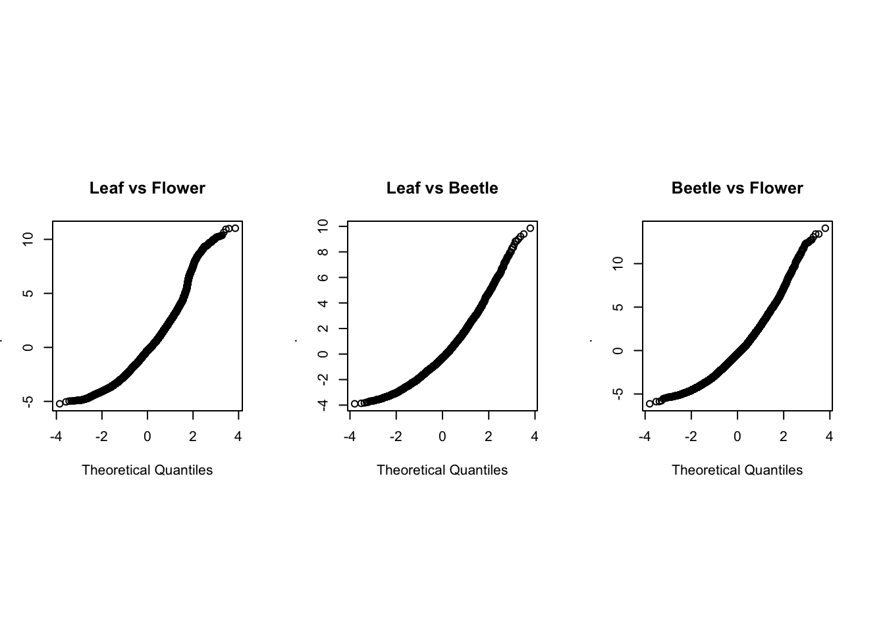
Aim 2
D65
par(mfrow=c(1,3), pin = c(1.5, 1.5))
for (i in 1:length(input.list.norm_d65.aim2)) {
qqnorm(input.list.norm_d65.aim2[[i]]$residuals,
main = group.list[[i]])
}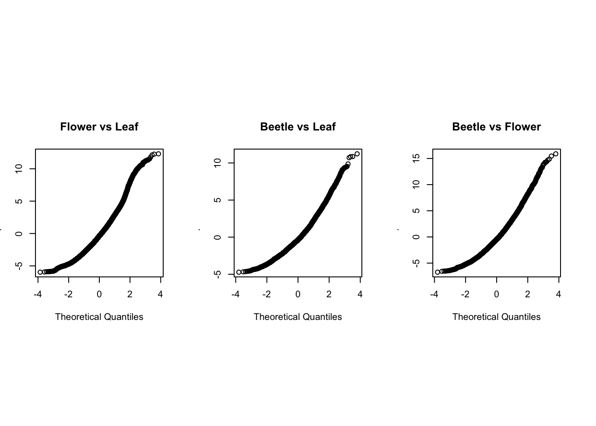
Twilight
par(mfrow=c(1,3), pin = c(1.5, 1.5))
for (i in 1:length(input.list.norm_twilight.aim2)) {
qqnorm(input.list.norm_twilight.aim2[[i]]$residuals,
main = group.list[[i]])
}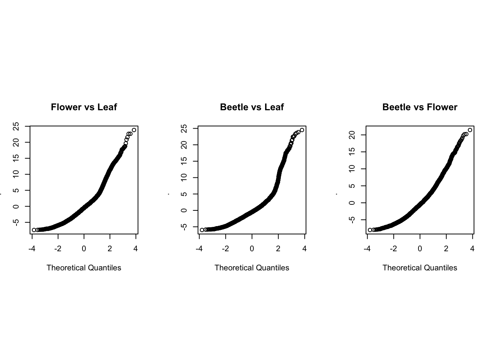
Homoscedasticity
vislist.aim1 <- c("UML", "USL", "USM", "USML")
vislist.aim2 <- c("VS 580", "VS 600", "VS 620", "VS 640", "VS 660")Aim 1
D65
par (mfrow = c(1,3), oma = c(2,2,0,0)) #oma=c() to create space for common labels
for (i in 1:length(input.list.regres_d65.aim1)) {
boxplot(input.list.regres_d65.aim1[[i]]$dS ~ input.list.regres_d65.aim1[[i]][,4],
# the forth column is the compairson group name
las = 2,
main = group.list[[i]],
names = vislist.aim1)
}
mtext("Visual system",side = 1, line = 0, outer = TRUE, cex = 1.3)
#side assigns the position of the text e.g. bottom
mtext("Contrast (JND)",side = 2, line = 0, outer = TRUE, cex = 1.3, las = 0) 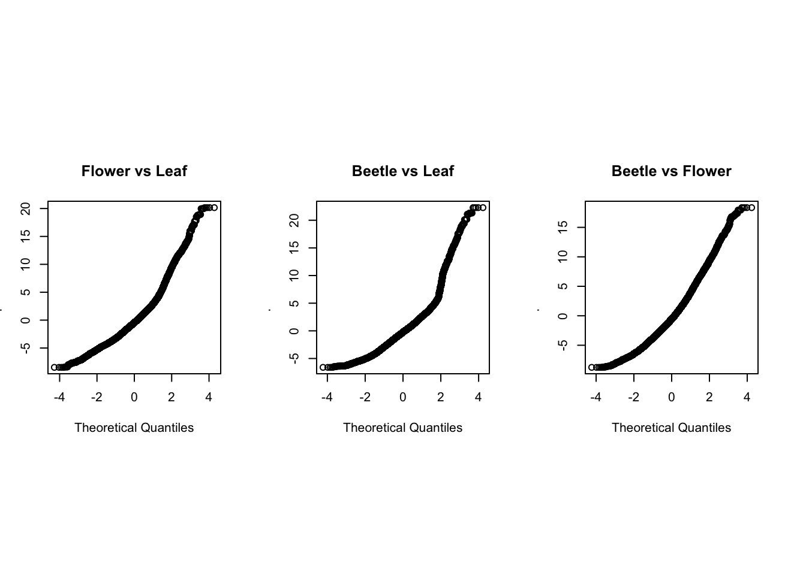
#las assigns the orientation of the textTwilight
par (mfrow = c(1,3), oma = c(2,2,0,0))
for (i in 1:length(input.list.regres_twilight.aim1)) {
boxplot(input.list.regres_twilight.aim1[[i]]$dS ~ input.list.regres_twilight.aim1[[i]][,4],
las = 2,
main = group.list[[i]],
names = vislist.aim1)
}
mtext("Visual system",side = 1, line = 0, outer = TRUE, cex = 1.3)
mtext("Contrast (JND)",side = 2, line = 0, outer = TRUE, cex = 1.3, las = 0) 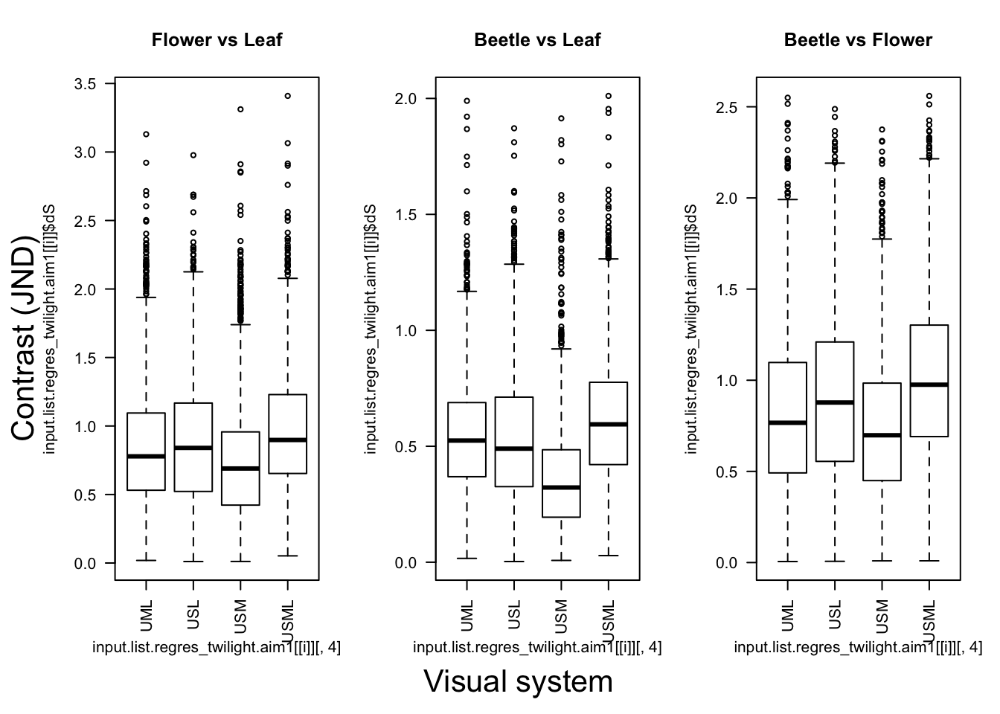
Aim 2
D65
par (mfrow = c(1,3), oma = c(2,2,0,0))
for (i in 1:length(input.list.regres_d65.aim2)) {
boxplot(input.list.regres_d65.aim2[[i]]$dS ~ input.list.regres_d65.aim2[[i]][,4],
las = 2,
main = group.list[[i]],
names = vislist.aim2)
}
mtext("Visual system",side = 1, line = 0, outer = TRUE, cex = 1.3)
mtext("Contrast (JND)",side = 2, line = 0, outer = TRUE, cex = 1.3, las = 0) 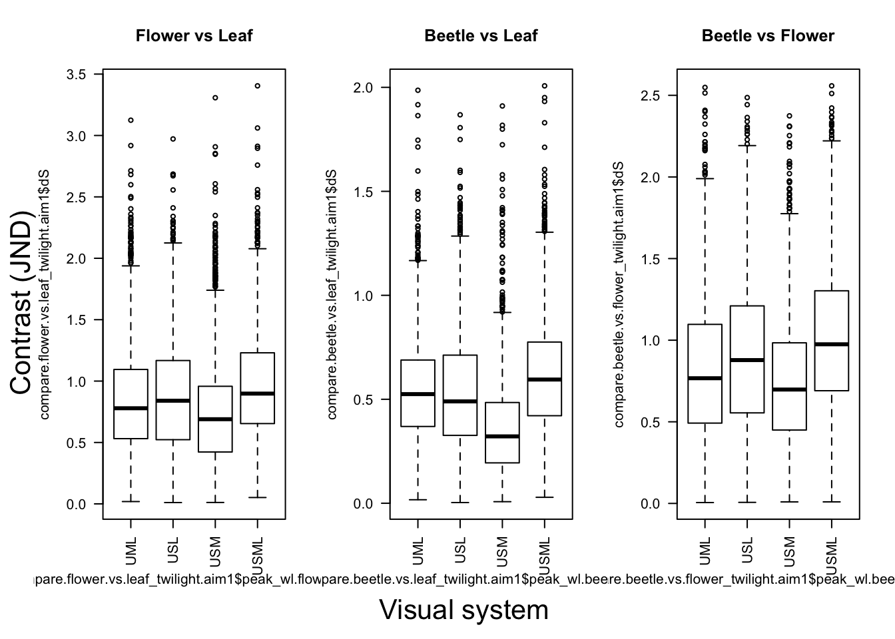
Twilight
par (mfrow = c(1,3), oma = c(2,2,0,0))
for (i in 1:length(input.list.regres_twilight.aim2)) {
boxplot(input.list.regres_twilight.aim2[[i]]$dS ~ input.list.regres_twilight.aim2[[i]][,4],
las = 2,
main = group.list[[i]],
names = vislist.aim2)
}
mtext("Visual system",side = 1, line = 0, outer = TRUE, cex = 1.3)
mtext("Contrast (JND)",side = 2, line = 0, outer = TRUE, cex = 1.3, las = 0) 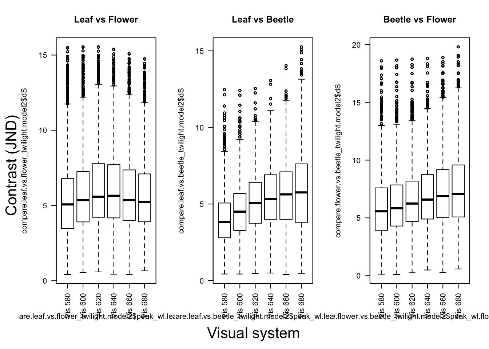
GLMM results
get.lmer <- function(datlist, compnnumber){
lmer(dS ~ vissys + (1|patch2) + (1|patch1),
data = datlist[[compnnumber]], REML = F)
#REML=F, in order to fit the model using the likelihood ratio test. Otherwise, the lmer default will fit the model using the REML (REstricted Maximum Likelihood) criterion.
}
get.posthocsum <- function(modelx){
summary(glht(modelx,
linfct = mcp(vissys = "Tukey")),
test = adjusted("bonferroni"))
}#GLMM - D65 - aim 1
##Flower vs Leaf
m.flower.vs.leaf_d65.aim1 <- get.lmer(input.list.regres_d65.aim1, 1)
sum.flower.vs.leaf_d65.aim1 <- get.posthocsum(m.flower.vs.leaf_d65.aim1)
##Beetle vs Leaf
m.beetle.vs.leaf_d65.aim1 <- get.lmer(input.list.regres_d65.aim1, 2)
sum.beetle.vs.leaf_d65.aim1 <- get.posthocsum(m.beetle.vs.leaf_d65.aim1)
##Beetle vs Flower
m.beetle.vs.flower_d65.aim1 <- get.lmer(input.list.regres_d65.aim1, 3)
sum.beetle.vs.flower_d65.aim1 <- get.posthocsum(m.beetle.vs.flower_d65.aim1)
#GLMM - D65 - Aim 2
##Flower vs Leaf
m.flower.vs.leaf_d65.aim2 <- get.lmer(input.list.regres_d65.aim2, 1)
sum.flower.vs.leaf_d65.aim2 <- get.posthocsum(m.flower.vs.leaf_d65.aim2)
##Beetle vs Leaf
m.beetle.vs.leaf_d65.aim2 <- get.lmer(input.list.regres_d65.aim2, 2)
sum.beetle.vs.leaf_d65.aim2 <- get.posthocsum(m.beetle.vs.leaf_d65.aim2)
##Beetle vs Flower
m.beetle.vs.flower_d65.aim2 <- get.lmer(input.list.regres_d65.aim2, 3)
sum.beetle.vs.flower_d65.aim2 <- get.posthocsum(m.beetle.vs.flower_d65.aim2)
#GLMM - Twilight - Aim 1
##Flower vs Leaf
m.flower.vs.leaf_twilight.aim1 <- get.lmer(input.list.regres_twilight.aim1, 1)
sum.flower.vs.leaf_twilight.aim1 <- get.posthocsum(m.flower.vs.leaf_twilight.aim1)
##Beetle vs Leaf
m.beetle.vs.leaf_twilight.aim1 <- get.lmer(input.list.regres_twilight.aim1, 2)
sum.beetle.vs.leaf_twilight.aim1 <- get.posthocsum(m.beetle.vs.leaf_twilight.aim1)
##Beetle vs Flower
m.beetle.vs.flower_twilight.aim1 <- get.lmer(input.list.regres_twilight.aim1, 3)
sum.beetle.vs.flower_twilight.aim1 <- get.posthocsum(m.beetle.vs.flower_twilight.aim1)
#GLMM - Twilight - Aim 2
##Flower vs Leaf
m.flower.vs.leaf_twilight.aim2 <- get.lmer(input.list.regres_twilight.aim2, 1)
sum.flower.vs.leaf_twilight.aim2 <- get.posthocsum(m.flower.vs.leaf_twilight.aim2)
##Beetle vs Leaf
m.beetle.vs.leaf_twilight.aim2 <- get.lmer(input.list.regres_twilight.aim2, 2)
sum.beetle.vs.leaf_twilight.aim2 <- get.posthocsum(m.beetle.vs.leaf_twilight.aim2)
##Beetle vs Flower
m.beetle.vs.flower_twilight.aim2 <- get.lmer(input.list.regres_twilight.aim2, 3)
sum.beetle.vs.flower_twilight.aim2 <- get.posthocsum(m.beetle.vs.flower_twilight.aim2)# Set up lists
vislist.heatmap.aim1 <- list(c("USL", "USM","USML","USM","USML","USML"),
c("UML", "UML","UML","USL","USL","USM"))
vislist.heatmap.aim2 <- list(c("VS 600", "VS 620","VS 640","VS 660","VS 620","VS 640","VS 660","VS 640","VS 660","VS 660"),
c("VS 580","VS 580","VS 580","VS 580","VS 600","VS 600","VS 600","VS 620","VS 620","VS 640"))
# Set up the function
get.heatmap.datframe <- function(i,z){
heatmapdat.i <- data.frame(as.numeric(str_extract(i[[1]],"([0-9]+).*$"))) %>%
cbind(as.numeric(str_extract(i[[2]],"([0-9]+).*$"))) %>%
cbind(as.numeric(str_extract(i[[3]],"([0-9]+).*$"))) %>%
dplyr::rename(flower.vs.leaf = 1, beetle.vs.leaf = 2, beetle.vs.flower = 3) %>%
cbind(z[[1]]) %>%
cbind(z[[2]])
colnames(heatmapdat.i)[4:5] <- c("VislistA", "VislistB")
return(heatmapdat.i)
}# D65 - Aim 1
## reshape data for heat map
pdata_d65.aim1 <- list(sum.flower.vs.leaf_d65.aim1[["test"]][["pvalues"]],
sum.beetle.vs.leaf_d65.aim1[["test"]][["pvalues"]],
sum.beetle.vs.flower_d65.aim1[["test"]][["pvalues"]])
heat_d65.aim1 <- get.heatmap.datframe(pdata_d65.aim1, vislist.heatmap.aim1)
# D65 - Aim 2
## reshape data for heat map
pdata_d65.aim2 <- list(sum.flower.vs.leaf_d65.aim2[["test"]][["pvalues"]],
sum.beetle.vs.leaf_d65.aim2[["test"]][["pvalues"]],
sum.beetle.vs.flower_d65.aim2[["test"]][["pvalues"]])
heat_d65.aim2 <- get.heatmap.datframe(pdata_d65.aim2, vislist.heatmap.aim2)
#Twilight - Aim 1
## reshape data for heatmap
pdata_twilight.aim1 <- list(sum.flower.vs.leaf_twilight.aim1[["test"]][["pvalues"]],
sum.beetle.vs.leaf_twilight.aim1[["test"]][["pvalues"]],
sum.beetle.vs.flower_twilight.aim1[["test"]][["pvalues"]])
heat_twilight.aim1 <- get.heatmap.datframe(pdata_twilight.aim1, vislist.heatmap.aim1)
# Twilight - Aim 2
##reshape data for heat map
pdata_twilight.aim2 <- list(sum.flower.vs.leaf_twilight.aim2[["test"]][["pvalues"]],
sum.beetle.vs.leaf_twilight.aim2[["test"]][["pvalues"]],
sum.beetle.vs.flower_twilight.aim2[["test"]][["pvalues"]])
heat_twilight.aim2 <- get.heatmap.datframe(pdata_twilight.aim2, vislist.heatmap.aim2)
# Assign asterisk signs
pdatalist <- list(heat_d65.aim1, heat_d65.aim2, heat_twilight.aim1, heat_twilight.aim2)
for (i in 1:length(pdatalist)) {
pdatalist[[i]]$sig.flower.vs.leaf[pdatalist[[i]]$flower.vs.leaf > 0.05] <- ""
pdatalist[[i]]$sig.flower.vs.leaf[pdatalist[[i]]$flower.vs.leaf < 0.05] <- "*"
pdatalist[[i]]$sig.flower.vs.leaf[pdatalist[[i]]$flower.vs.leaf < 0.01] <- "**"
pdatalist[[i]]$sig.flower.vs.leaf[pdatalist[[i]]$flower.vs.leaf < 0.0001] <- "***"
pdatalist[[i]]$sig.beetle.vs.leaf[pdatalist[[i]]$beetle.vs.leaf > 0.05] <- ""
pdatalist[[i]]$sig.beetle.vs.leaf[pdatalist[[i]]$beetle.vs.leaf < 0.05] <- "*"
pdatalist[[i]]$sig.beetle.vs.leaf[pdatalist[[i]]$beetle.vs.leaf < 0.01] <- "**"
pdatalist[[i]]$sig.beetle.vs.leaf[pdatalist[[i]]$beetle.vs.leaf < 0.0001] <- "***"
pdatalist[[i]]$sig.beetle.vs.flower[pdatalist[[i]]$beetle.vs.flower > 0.05] <- ""
pdatalist[[i]]$sig.beetle.vs.flower[pdatalist[[i]]$beetle.vs.flower < 0.05] <- "*"
pdatalist[[i]]$sig.beetle.vs.flower[pdatalist[[i]]$beetle.vs.flower < 0.01] <- "**"
pdatalist[[i]]$sig.beetle.vs.flower[pdatalist[[i]]$beetle.vs.flower < 0.0001] <- "***"
}
# Because we did the assignment on a data list, now we need to link the loop output back to the data respectively
heat_d65.aim1 <- pdatalist[[1]]
heat_d65.aim2 <- pdatalist[[2]]
heat_twilight.aim1 <- pdatalist[[3]]
heat_twilight.aim2 <- pdatalist[[4]]Results of Aim 1: comparing visual systems with different photoreceptor combinations
Click the tabs to see the results for each comparison group ( Flower vs. Leaf / Beetle vs. Leaf / Beetle vs. Flower) and under different light conditions ( Daylight / Twilight)
# a = data
# b = 1/2/3; 1 for flower.vs.leaf, 2 for beetle.vs.leaf, 3 for beetle.vs.flower
get.pheatmap <- function(a, b){ggplot(data = a,
aes(x = VislistA,
y = VislistB,
fill = a[,b])) +
geom_tile(colour = "white", size = 4)+
geom_text(aes(VislistA,
VislistB,
label = paste(format(round(a[,b], 2), nsmall = 2),
a[, b+5])))+
scale_fill_continuous(high = "#132B43", low = "#56B1F7", limit = c(0,1))+ #delete if want to reverse the colour
theme_bw()+
theme(axis.title.x = element_blank(),
axis.title.y = element_blank(),
panel.grid = element_blank(),
panel.border = element_blank(),
axis.ticks = element_blank() )+
labs(fill = "p value")
}Flower v.s Leaf
Daylight
Anova(m.flower.vs.leaf_d65.aim1) %>% pander()| Chisq | Df | Pr(>Chisq) | |
|---|---|---|---|
| vissys | 78.74 | 3 | 5.727e-17 |
Click the tabs to see posthoc results ( p-value summary plot / original model output )
Pair-wise p-values
get.pheatmap(heat_d65.aim1, 1)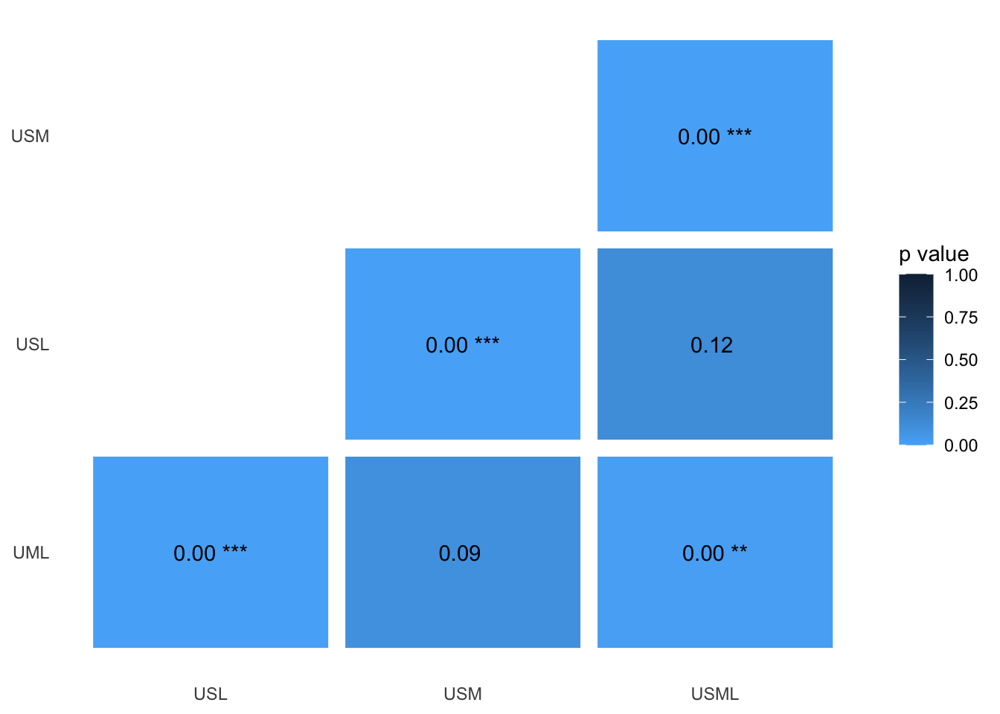
Original model output
sum.flower.vs.leaf_d65.aim1##
## Simultaneous Tests for General Linear Hypotheses
##
## Multiple Comparisons of Means: Tukey Contrasts
##
##
## Fit: lmer(formula = dS ~ vissys + (1 | patch2) + (1 | patch1), data = datlist[[compnnumber]],
## REML = F)
##
## Linear Hypotheses:
## Estimate Std. Error z value Pr(>|z|)
## UVSW..LW.fl - UV..MWLW.fl == 0 0.33900 0.05889 5.756 5.16e-08 ***
## UVSWMW...fl - UV..MWLW.fl == 0 -0.14259 0.05889 -2.421 0.09281 .
## UVSWMWLW.fl - UV..MWLW.fl == 0 0.20280 0.05889 3.444 0.00344 **
## UVSWMW...fl - UVSW..LW.fl == 0 -0.48158 0.05889 -8.178 1.33e-15 ***
## UVSWMWLW.fl - UVSW..LW.fl == 0 -0.13620 0.05889 -2.313 0.12443
## UVSWMWLW.fl - UVSWMW...fl == 0 0.34539 0.05889 5.865 2.70e-08 ***
## ---
## Signif. codes: 0 '***' 0.001 '**' 0.01 '*' 0.05 '.' 0.1 ' ' 1
## (Adjusted p values reported -- bonferroni method)Twilight
Anova(m.flower.vs.leaf_twilight.aim1) %>% pander()| Chisq | Df | Pr(>Chisq) | |
|---|---|---|---|
| vissys | 816.2 | 3 | 1.324e-176 |
Click the tabs to see posthoc results ( p-value summary plot / original model output )
Pair-wise p-values
get.pheatmap(heat_twilight.aim1, 1)
Original model output
sum.flower.vs.leaf_twilight.aim1##
## Simultaneous Tests for General Linear Hypotheses
##
## Multiple Comparisons of Means: Tukey Contrasts
##
##
## Fit: lmer(formula = dS ~ vissys + (1 | patch2) + (1 | patch1), data = datlist[[compnnumber]],
## REML = F)
##
## Linear Hypotheses:
## Estimate Std. Error z value Pr(>|z|)
## UVSW..LW.fl - UV..MWLW.fl == 0 0.034171 0.007986 4.279 0.000113 ***
## UVSWMW...fl - UV..MWLW.fl == 0 -0.094219 0.007986 -11.798 < 2e-16 ***
## UVSWMWLW.fl - UV..MWLW.fl == 0 0.131353 0.007986 16.448 < 2e-16 ***
## UVSWMW...fl - UVSW..LW.fl == 0 -0.128391 0.007986 -16.077 < 2e-16 ***
## UVSWMWLW.fl - UVSW..LW.fl == 0 0.097181 0.007986 12.169 < 2e-16 ***
## UVSWMWLW.fl - UVSWMW...fl == 0 0.225572 0.007986 28.246 < 2e-16 ***
## ---
## Signif. codes: 0 '***' 0.001 '**' 0.01 '*' 0.05 '.' 0.1 ' ' 1
## (Adjusted p values reported -- bonferroni method)Beetle vs. Leaf
Daylight
Anova(m.beetle.vs.leaf_d65.aim1) %>% pander()| Chisq | Df | Pr(>Chisq) | |
|---|---|---|---|
| vissys | 665.3 | 3 | 6.952e-144 |
Click the tabs to see posthoc results ( p-value summary plot / original model output )
Pair-wise p-values
get.pheatmap(heat_d65.aim1, 2)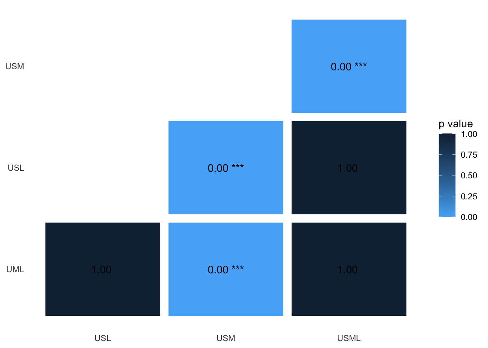
Original model output
sum.beetle.vs.leaf_d65.aim1##
## Simultaneous Tests for General Linear Hypotheses
##
## Multiple Comparisons of Means: Tukey Contrasts
##
##
## Fit: lmer(formula = dS ~ vissys + (1 | patch2) + (1 | patch1), data = datlist[[compnnumber]],
## REML = F)
##
## Linear Hypotheses:
## Estimate Std. Error z value Pr(>|z|)
## UVSW..LW.bl - UV..MWLW.bl == 0 0.01198 0.05361 0.224 1
## UVSWMW...bl - UV..MWLW.bl == 0 -1.12974 0.05361 -21.073 <2e-16 ***
## UVSWMWLW.bl - UV..MWLW.bl == 0 -0.01463 0.05361 -0.273 1
## UVSWMW...bl - UVSW..LW.bl == 0 -1.14172 0.05361 -21.297 <2e-16 ***
## UVSWMWLW.bl - UVSW..LW.bl == 0 -0.02661 0.05361 -0.496 1
## UVSWMWLW.bl - UVSWMW...bl == 0 1.11512 0.05361 20.800 <2e-16 ***
## ---
## Signif. codes: 0 '***' 0.001 '**' 0.01 '*' 0.05 '.' 0.1 ' ' 1
## (Adjusted p values reported -- bonferroni method)Twilight
Anova(m.beetle.vs.leaf_twilight.aim1) %>% pander()| Chisq | Df | Pr(>Chisq) | |
|---|---|---|---|
| vissys | 2010 | 3 | 0 |
Click the tabs to see posthoc results ( p-value summary plot / original model output )
Pair-wise p-values
get.pheatmap(heat_twilight.aim1, 2)Original model output
sum.beetle.vs.leaf_twilight.aim1##
## Simultaneous Tests for General Linear Hypotheses
##
## Multiple Comparisons of Means: Tukey Contrasts
##
##
## Fit: lmer(formula = dS ~ vissys + (1 | patch2) + (1 | patch1), data = datlist[[compnnumber]],
## REML = F)
##
## Linear Hypotheses:
## Estimate Std. Error z value Pr(>|z|)
## UVSW..LW.bl - UV..MWLW.bl == 0 -0.007469 0.005875 -1.271 1
## UVSWMW...bl - UV..MWLW.bl == 0 -0.182602 0.005875 -31.083 <2e-16 ***
## UVSWMWLW.bl - UV..MWLW.bl == 0 0.069963 0.005875 11.910 <2e-16 ***
## UVSWMW...bl - UVSW..LW.bl == 0 -0.175132 0.005875 -29.812 <2e-16 ***
## UVSWMWLW.bl - UVSW..LW.bl == 0 0.077433 0.005875 13.181 <2e-16 ***
## UVSWMWLW.bl - UVSWMW...bl == 0 0.252565 0.005875 42.993 <2e-16 ***
## ---
## Signif. codes: 0 '***' 0.001 '**' 0.01 '*' 0.05 '.' 0.1 ' ' 1
## (Adjusted p values reported -- bonferroni method)Beetle vs. Flower
Daylight
Anova(m.beetle.vs.flower_d65.aim1) %>% pander()| Chisq | Df | Pr(>Chisq) | |
|---|---|---|---|
| vissys | 115 | 3 | 9.263e-25 |
Click the tabs to see posthoc results ( p-value summary plot / original model output )
Pair-wise p-values
get.pheatmap(heat_d65.aim1, 3)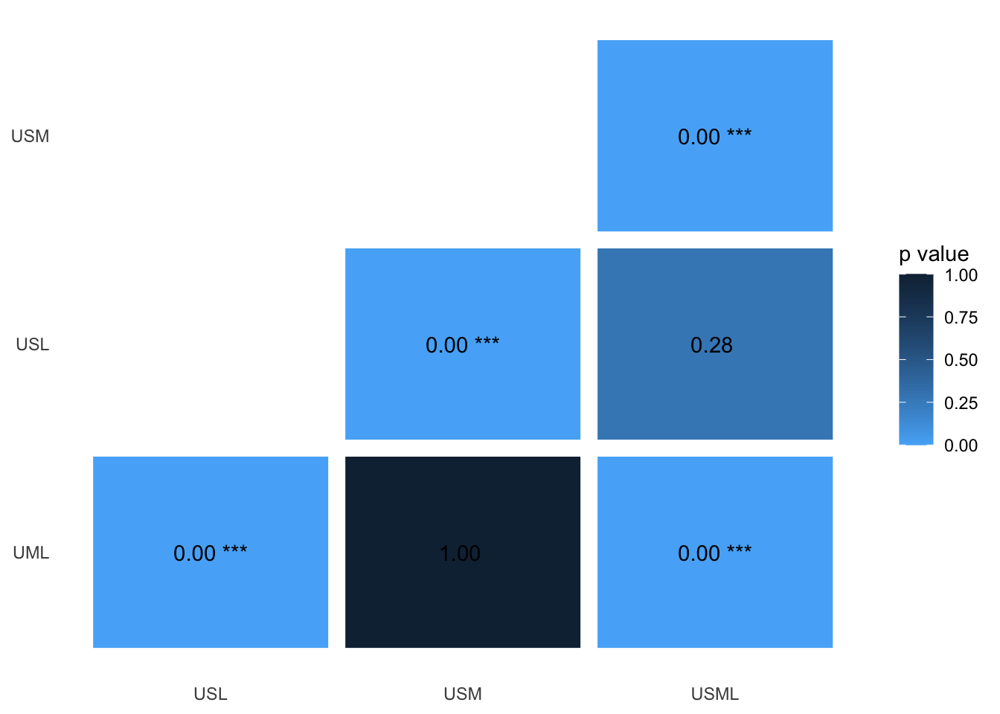
Original model output
sum.beetle.vs.flower_d65.aim1##
## Simultaneous Tests for General Linear Hypotheses
##
## Multiple Comparisons of Means: Tukey Contrasts
##
##
## Fit: lmer(formula = dS ~ vissys + (1 | patch2) + (1 | patch1), data = datlist[[compnnumber]],
## REML = F)
##
## Linear Hypotheses:
## Estimate Std. Error z value Pr(>|z|)
## UVSW..LW.bf - UV..MWLW.bf == 0 0.638342 0.075013 8.510 < 2e-16 ***
## UVSWMW...bf - UV..MWLW.bf == 0 0.009374 0.075013 0.125 1.000
## UVSWMWLW.bf - UV..MWLW.bf == 0 0.488655 0.075013 6.514 4.38e-10 ***
## UVSWMW...bf - UVSW..LW.bf == 0 -0.628968 0.075013 -8.385 < 2e-16 ***
## UVSWMWLW.bf - UVSW..LW.bf == 0 -0.149687 0.075013 -1.995 0.276
## UVSWMWLW.bf - UVSWMW...bf == 0 0.479281 0.075013 6.389 1.00e-09 ***
## ---
## Signif. codes: 0 '***' 0.001 '**' 0.01 '*' 0.05 '.' 0.1 ' ' 1
## (Adjusted p values reported -- bonferroni method)Twilight
Anova(m.beetle.vs.flower_twilight.aim1) %>% pander()| Chisq | Df | Pr(>Chisq) | |
|---|---|---|---|
| vissys | 740.2 | 3 | 4.024e-160 |
Click the tabs to see posthoc results ( p-value summary plot / original model output )
Pair-wise p-values
get.pheatmap(heat_twilight.aim1, 3)
Original model output
sum.beetle.vs.flower_twilight.aim1##
## Simultaneous Tests for General Linear Hypotheses
##
## Multiple Comparisons of Means: Tukey Contrasts
##
##
## Fit: lmer(formula = dS ~ vissys + (1 | patch2) + (1 | patch1), data = datlist[[compnnumber]],
## REML = F)
##
## Linear Hypotheses:
## Estimate Std. Error z value Pr(>|z|)
## UVSW..LW.bf - UV..MWLW.bf == 0 0.08163 0.01029 7.934 1.33e-14 ***
## UVSWMW...bf - UV..MWLW.bf == 0 -0.07569 0.01029 -7.356 1.14e-12 ***
## UVSWMWLW.bf - UV..MWLW.bf == 0 0.19101 0.01029 18.565 < 2e-16 ***
## UVSWMW...bf - UVSW..LW.bf == 0 -0.15731 0.01029 -15.290 < 2e-16 ***
## UVSWMWLW.bf - UVSW..LW.bf == 0 0.10938 0.01029 10.631 < 2e-16 ***
## UVSWMWLW.bf - UVSWMW...bf == 0 0.26670 0.01029 25.921 < 2e-16 ***
## ---
## Signif. codes: 0 '***' 0.001 '**' 0.01 '*' 0.05 '.' 0.1 ' ' 1
## (Adjusted p values reported -- bonferroni method)
Results of Aim 2: comparing visual systems with different LWS peak sensitivities
Click the tabs to see the results for each comparison group ( Flower vs. Leaf / Beetle vs. Leaf / Beetle vs. Flower) and under different light conditions ( Daylight / Twilight)
Flower v.s Leaf
Daylight
Anova(m.flower.vs.leaf_d65.aim2) %>% pander()| Chisq | Df | Pr(>Chisq) | |
|---|---|---|---|
| vissys | 2268 | 4 | 0 |
Click the tabs to see posthoc results ( p-value summary plot / original model output )
Pair-wise p-values
get.pheatmap(heat_d65.aim2, 1)
Original model output
sum.flower.vs.leaf_d65.aim2##
## Simultaneous Tests for General Linear Hypotheses
##
## Multiple Comparisons of Means: Tukey Contrasts
##
##
## Fit: lmer(formula = dS ~ vissys + (1 | patch2) + (1 | patch1), data = datlist[[compnnumber]],
## REML = F)
##
## Linear Hypotheses:
## Estimate Std. Error z value Pr(>|z|)
## VS600.fl - VS580.fl == 0 0.42097 0.04777 8.812 <2e-16 ***
## VS620.fl - VS580.fl == 0 1.17568 0.04777 24.609 <2e-16 ***
## VS640.fl - VS580.fl == 0 1.80399 0.04777 37.760 <2e-16 ***
## VS660.fl - VS580.fl == 0 1.76193 0.04777 36.880 <2e-16 ***
## VS620.fl - VS600.fl == 0 0.75471 0.04777 15.797 <2e-16 ***
## VS640.fl - VS600.fl == 0 1.38301 0.04777 28.949 <2e-16 ***
## VS660.fl - VS600.fl == 0 1.34096 0.04777 28.068 <2e-16 ***
## VS640.fl - VS620.fl == 0 0.62831 0.04777 13.151 <2e-16 ***
## VS660.fl - VS620.fl == 0 0.58625 0.04777 12.271 <2e-16 ***
## VS660.fl - VS640.fl == 0 -0.04206 0.04777 -0.880 1
## ---
## Signif. codes: 0 '***' 0.001 '**' 0.01 '*' 0.05 '.' 0.1 ' ' 1
## (Adjusted p values reported -- bonferroni method)Twilight
Anova(m.flower.vs.leaf_twilight.aim2) %>% pander()| Chisq | Df | Pr(>Chisq) | |
|---|---|---|---|
| vissys | 2576 | 4 | 0 |
Click the tabs to see posthoc results ( p-value summary plot / original model output )
Pair-wise p-values
get.pheatmap(heat_twilight.aim2, 1)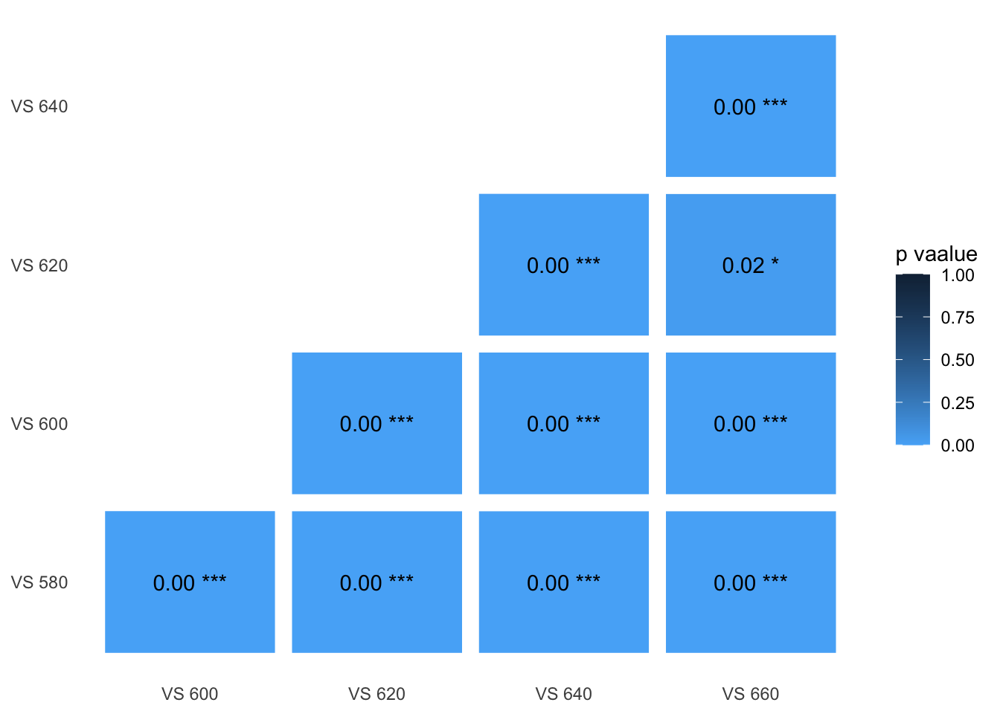
Original model output
sum.flower.vs.leaf_twilight.aim2##
## Simultaneous Tests for General Linear Hypotheses
##
## Multiple Comparisons of Means: Tukey Contrasts
##
##
## Fit: lmer(formula = dS ~ vissys + (1 | patch2) + (1 | patch1), data = datlist[[compnnumber]],
## REML = F)
##
## Linear Hypotheses:
## Estimate Std. Error z value Pr(>|z|)
## VS600.fl - VS580.fl == 0 0.095342 0.007344 12.983 <2e-16 ***
## VS620.fl - VS580.fl == 0 0.237202 0.007344 32.299 <2e-16 ***
## VS640.fl - VS580.fl == 0 0.322447 0.007344 43.907 <2e-16 ***
## VS660.fl - VS580.fl == 0 0.259795 0.007344 35.376 <2e-16 ***
## VS620.fl - VS600.fl == 0 0.141860 0.007344 19.317 <2e-16 ***
## VS640.fl - VS600.fl == 0 0.227104 0.007344 30.924 <2e-16 ***
## VS660.fl - VS600.fl == 0 0.164453 0.007344 22.393 <2e-16 ***
## VS640.fl - VS620.fl == 0 0.085245 0.007344 11.608 <2e-16 ***
## VS660.fl - VS620.fl == 0 0.022593 0.007344 3.077 0.0209 *
## VS660.fl - VS640.fl == 0 -0.062651 0.007344 -8.531 <2e-16 ***
## ---
## Signif. codes: 0 '***' 0.001 '**' 0.01 '*' 0.05 '.' 0.1 ' ' 1
## (Adjusted p values reported -- bonferroni method)Beetle vs. Leaf
Daylight
Anova(m.beetle.vs.leaf_d65.aim2) %>% pander()| Chisq | Df | Pr(>Chisq) | |
|---|---|---|---|
| vissys | 2119 | 4 | 0 |
Click the tabs to see posthoc results ( p-value summary plot / original model output )
Pair-wise p-values
get.pheatmap(heat_d65.aim2, 2)
Original model output
sum.beetle.vs.leaf_d65.aim2##
## Simultaneous Tests for General Linear Hypotheses
##
## Multiple Comparisons of Means: Tukey Contrasts
##
##
## Fit: lmer(formula = dS ~ vissys + (1 | patch2) + (1 | patch1), data = datlist[[compnnumber]],
## REML = F)
##
## Linear Hypotheses:
## Estimate Std. Error z value Pr(>|z|)
## VS600.bl - VS580.bl == 0 0.57356 0.04944 11.602 < 2e-16 ***
## VS620.bl - VS580.bl == 0 1.22449 0.04944 24.770 < 2e-16 ***
## VS640.bl - VS580.bl == 0 1.72490 0.04944 34.892 < 2e-16 ***
## VS660.bl - VS580.bl == 0 1.93477 0.04944 39.137 < 2e-16 ***
## VS620.bl - VS600.bl == 0 0.65093 0.04944 13.167 < 2e-16 ***
## VS640.bl - VS600.bl == 0 1.15135 0.04944 23.290 < 2e-16 ***
## VS660.bl - VS600.bl == 0 1.36121 0.04944 27.535 < 2e-16 ***
## VS640.bl - VS620.bl == 0 0.50041 0.04944 10.123 < 2e-16 ***
## VS660.bl - VS620.bl == 0 0.71028 0.04944 14.368 < 2e-16 ***
## VS660.bl - VS640.bl == 0 0.20986 0.04944 4.245 0.000218 ***
## ---
## Signif. codes: 0 '***' 0.001 '**' 0.01 '*' 0.05 '.' 0.1 ' ' 1
## (Adjusted p values reported -- bonferroni method)Twilight
Anova(m.beetle.vs.leaf_twilight.aim2) %>% pander()| Chisq | Df | Pr(>Chisq) | |
|---|---|---|---|
| vissys | 2659 | 4 | 0 |
Click the tabs to see posthoc results ( p-value summary plot / original model output )
Pair-wise p-values
get.pheatmap(heat_twilight.aim2, 2)Original model output
sum.beetle.vs.leaf_twilight.aim2##
## Simultaneous Tests for General Linear Hypotheses
##
## Multiple Comparisons of Means: Tukey Contrasts
##
##
## Fit: lmer(formula = dS ~ vissys + (1 | patch2) + (1 | patch1), data = datlist[[compnnumber]],
## REML = F)
##
## Linear Hypotheses:
## Estimate Std. Error z value Pr(>|z|)
## VS600.bl - VS580.bl == 0 0.096971 0.006024 16.097 <2e-16 ***
## VS620.bl - VS580.bl == 0 0.194605 0.006024 32.305 <2e-16 ***
## VS640.bl - VS580.bl == 0 0.254535 0.006024 42.254 <2e-16 ***
## VS660.bl - VS580.bl == 0 0.252436 0.006024 41.905 <2e-16 ***
## VS620.bl - VS600.bl == 0 0.097635 0.006024 16.208 <2e-16 ***
## VS640.bl - VS600.bl == 0 0.157565 0.006024 26.156 <2e-16 ***
## VS660.bl - VS600.bl == 0 0.155465 0.006024 25.808 <2e-16 ***
## VS640.bl - VS620.bl == 0 0.059930 0.006024 9.949 <2e-16 ***
## VS660.bl - VS620.bl == 0 0.057830 0.006024 9.600 <2e-16 ***
## VS660.bl - VS640.bl == 0 -0.002100 0.006024 -0.349 1
## ---
## Signif. codes: 0 '***' 0.001 '**' 0.01 '*' 0.05 '.' 0.1 ' ' 1
## (Adjusted p values reported -- bonferroni method)Beetle vs. Flower
Daylight
Anova(m.beetle.vs.flower_d65.aim2) %>% pander()| Chisq | Df | Pr(>Chisq) | |
|---|---|---|---|
| vissys | 607.9 | 4 | 3.052e-130 |
Click the tabs to see posthoc results ( p-value summary plot / original model output )
Pair-wise p-values
get.pheatmap(heat_d65.aim2, 3)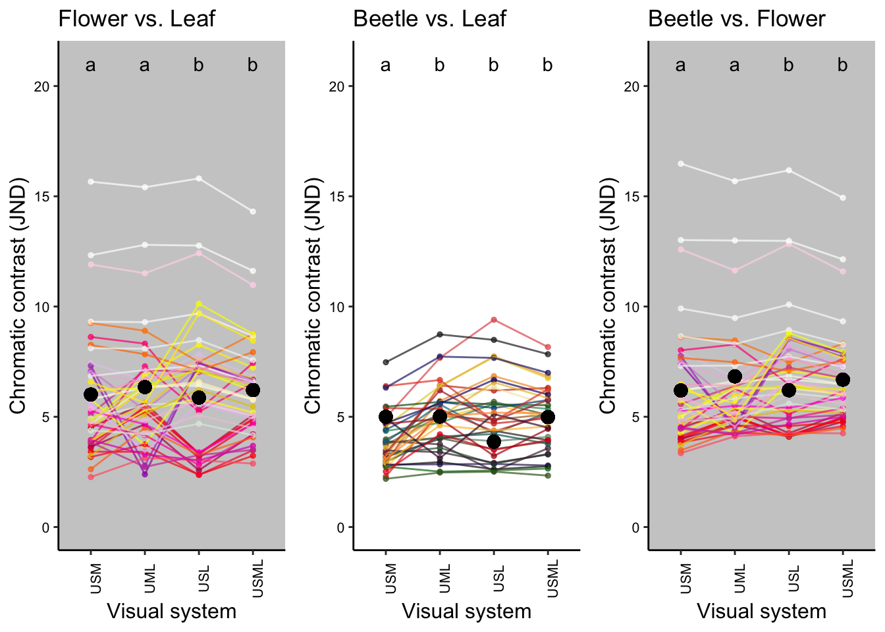
Original model output
sum.beetle.vs.flower_d65.aim2##
## Simultaneous Tests for General Linear Hypotheses
##
## Multiple Comparisons of Means: Tukey Contrasts
##
##
## Fit: lmer(formula = dS ~ vissys + (1 | patch2) + (1 | patch1), data = datlist[[compnnumber]],
## REML = F)
##
## Linear Hypotheses:
## Estimate Std. Error z value Pr(>|z|)
## VS600.bf - VS580.bf == 0 0.37988 0.07044 5.393 6.93e-07 ***
## VS620.bf - VS580.bf == 0 0.84419 0.07044 11.985 < 2e-16 ***
## VS640.bf - VS580.bf == 0 1.22628 0.07044 17.409 < 2e-16 ***
## VS660.bf - VS580.bf == 0 1.51287 0.07044 21.477 < 2e-16 ***
## VS620.bf - VS600.bf == 0 0.46431 0.07044 6.592 4.35e-10 ***
## VS640.bf - VS600.bf == 0 0.84640 0.07044 12.016 < 2e-16 ***
## VS660.bf - VS600.bf == 0 1.13299 0.07044 16.084 < 2e-16 ***
## VS640.bf - VS620.bf == 0 0.38209 0.07044 5.424 5.82e-07 ***
## VS660.bf - VS620.bf == 0 0.66868 0.07044 9.493 < 2e-16 ***
## VS660.bf - VS640.bf == 0 0.28659 0.07044 4.069 0.000473 ***
## ---
## Signif. codes: 0 '***' 0.001 '**' 0.01 '*' 0.05 '.' 0.1 ' ' 1
## (Adjusted p values reported -- bonferroni method)Twilight
Anova(m.beetle.vs.flower_twilight.aim2) %>% pander()| Chisq | Df | Pr(>Chisq) | |
|---|---|---|---|
| vissys | 925.6 | 4 | 4.717e-199 |
Click the tabs to see posthoc results ( p-value summary plot / original model output )
Pair-wise p-values
get.pheatmap(heat_twilight.aim2, 3)Original model output
sum.beetle.vs.flower_twilight.aim2##
## Simultaneous Tests for General Linear Hypotheses
##
## Multiple Comparisons of Means: Tukey Contrasts
##
##
## Fit: lmer(formula = dS ~ vissys + (1 | patch2) + (1 | patch1), data = datlist[[compnnumber]],
## REML = F)
##
## Linear Hypotheses:
## Estimate Std. Error z value Pr(>|z|)
## VS600.bf - VS580.bf == 0 0.09508 0.01147 8.288 2.22e-15 ***
## VS620.bf - VS580.bf == 0 0.19777 0.01147 17.239 < 2e-16 ***
## VS640.bf - VS580.bf == 0 0.26834 0.01147 23.391 < 2e-16 ***
## VS660.bf - VS580.bf == 0 0.29635 0.01147 25.833 < 2e-16 ***
## VS620.bf - VS600.bf == 0 0.10269 0.01147 8.951 < 2e-16 ***
## VS640.bf - VS600.bf == 0 0.17326 0.01147 15.103 < 2e-16 ***
## VS660.bf - VS600.bf == 0 0.20127 0.01147 17.544 < 2e-16 ***
## VS640.bf - VS620.bf == 0 0.07057 0.01147 6.152 7.66e-09 ***
## VS660.bf - VS620.bf == 0 0.09858 0.01147 8.593 < 2e-16 ***
## VS660.bf - VS640.bf == 0 0.02801 0.01147 2.442 0.146
## ---
## Signif. codes: 0 '***' 0.001 '**' 0.01 '*' 0.05 '.' 0.1 ' ' 1
## (Adjusted p values reported -- bonferroni method)
Plot the contrasts
- Colours approximate human perception of either flower (left and right) or beetle (centre) colouration.
- Lines of the same colors connect the same sample
#import the sample color code
color.code <- read.csv("data/color code list.csv", header=TRUE)
# Set up a function to calculate means for the plot
get.plotmeans <- function(a, b, c){
if (a == "aim1"){
if(b == "bl"){
plotmean.i <- c %>%
group_by(patch2, vissys) %>%
summarize(mean.dS.sub = mean(dS)) %>%
ungroup() %>%
rename(beetleID = patch2) %>%
merge(beetle.colour.aim1[,c("species", "colour")], by.x = c("beetleID"), by.y = c("species")) %>%
distinct()
return(plotmean.i)
} else {
plotmean.i <- c %>%
group_by(patch1, vissys) %>%
summarize(mean.dS.sub = mean(dS)) %>%
ungroup() %>%
rename(flowerID = patch1) %>%
merge(flower.colour.aim1[,c("species", "colour")], by.x = c("flowerID"), by.y = c("species")) %>%
distinct()
return(plotmean.i)
}
} else if (a == "aim2"){
if (b == "bl"){
plotmean.i <- c %>%
group_by(patch2, vissys) %>%
summarize(mean.dS.sub = mean(dS)) %>%
ungroup() %>%
rename(beetleID = patch2) %>%
merge(beetle.colour.aim2[,c("species", "colour")], by.x = c("beetleID"), by.y = c("species")) %>%
distinct()
return(plotmean.i)
} else {
plotmean.i <- c %>%
group_by(patch1, vissys) %>%
summarize(mean.dS.sub = mean(dS)) %>%
ungroup() %>%
rename(flowerID = patch1) %>%
merge(flower.colour.aim2[,c("species", "colour")], by.x = c("flowerID"), by.y = c("species")) %>%
distinct()
return(plotmean.i)
}
}
}
# What should be put in the function get.plotmeans()
# a = "aim1" or "aim2"
# b = comparison type: "fl", "bl", "bf"
# c = input data, e.g. allvis.fl_d65.aim1#create a list of species name used in the spec data in oder to merge() with mean data set later
name.list <- unique(dataset.transpose$species) %>%
sort() %>% #order it alphabetically
data.frame() %>%
dplyr::rename(species = ".") #make it a data frame and name the column "species"
# create flower and beetle name list
colourgrouplist <- c( "flower", "beetle")
tempcolordat <- vector("list", 4)
## for aim 1
for(i in seq_along(colourgrouplist)){
ouput.i <- name.list %>%
filter(str_detect(species, colourgrouplist[i])) %>%
cbind(color.code %>%
filter(str_detect(type, colourgrouplist[i])) %>%
arrange(name)) %>%
dplyr::select(-type) %>%
mutate(count = 4) %>%
uncount(count)
tempcolordat[[i]] <- ouput.i
}
flower.colour.aim1 <- tempcolordat[[1]]
beetle.colour.aim1 <- tempcolordat[[2]]
## for Aim 2
for(i in seq_along(colourgrouplist)){
ouput.i <- name.list %>%
filter(str_detect(species, colourgrouplist[i])) %>%
cbind(color.code %>%
filter(str_detect(type, colourgrouplist[i])) %>%
arrange(name)) %>%
dplyr::select(-type) %>%
mutate(count = 5) %>%
uncount(count)
tempcolordat[[i+2]] <- ouput.i # here same in i+2 because 1-2 is for aim1
}
flower.colour.aim2 <- tempcolordat[[3]]
beetle.colour.aim2 <- tempcolordat[[4]]allvis.list <- list(allvis.fl_d65.aim1, allvis.bl_d65.aim1, allvis.bf_d65.aim1,
allvis.fl_d65.aim2, allvis.bl_d65.aim2, allvis.bf_d65.aim2,
allvis.fl_twilight.aim1, allvis.bl_twilight.aim1, allvis.bf_twilight.aim1,
allvis.fl_twilight.aim2, allvis.bl_twilight.aim2, allvis.bf_twilight.aim2)
tempcolordat <- vector("list", length(allvis.list))
for(i in seq_along(allvis.list)){
temp.meandS.i <- allvis.list[[i]] %>%
group_by(vissys) %>%
summarize(mean.dS = mean(dS))
tempcolordat[[i]] <- temp.meandS.i
}
reorder.aim1.list <- c(1, 2, 3, 7, 8, 9)
for (i in reorder.aim1.list) {
tempcolordat[[i]] <- tempcolordat[[i]][c(3, 1, 2, 4),]
}title.list <- list("Flower vs. Leaf", "Beetle vs. Leaf", "Beetle vs. Flower")
ylim.list <- c(21, 2) # 21 for aim1, 2 for aim2
vislable.list <- list(c("USM", "UML", "USL","USML"), # aim1
c("VS 580", "VS 600","VS 620","VS 640","VS 660")) # aim2
vis.comp.list <- list(fl.aim1 <- c("UVSWMW...fl", "UV..MWLW.fl", "UVSW..LW.fl", "UVSWMWLW.fl"),
bl.aim1 <- c("UVSWMW...bl", "UV..MWLW.bl", "UVSW..LW.bl", "UVSWMWLW.bl"),
bf.aim1 <- c("UVSWMW...bf", "UV..MWLW.bf", "UVSW..LW.bf", "UVSWMWLW.bf"),
fl.aim2 <- c("VS580.fl", "VS600.fl", "VS620.fl", "VS640.fl", "VS660.fl"),
bl.aim2 <- c("VS580.bl", "VS600.bl", "VS620.bl", "VS640.bl", "VS660.bl"),
bf.aim2 <- c("VS580.bf", "VS600.bf", "VS620.bf", "VS640.bf", "VS660.bf"))
stats.list <- list(fl_d65.aim1 <- c("a","a","b","b"),
bl_d65.aim1 <- c("a","b","b","b"),
bf_d65.aim1 <- c("a","a","b","b"),
fl_d65.aim2 <- c("a","b","c","d","d"),
bl_d65.aim2 <- c("a","b","c","d","e"),
bf_d65.aim2 <- c("a","b","c","d","e"),
fl_twilight.aim1 <- c("a","b","c","d"),
bl_twilight.aim1 <- c("a","b","b","c"),
bf_twilight.aim1 <- c("a","b","c","d"),
fl_twilight.aim2 <- c("a","b","c","d","e"),
bl_twilight.aim2 <- c("a","b","c","d","d"),
bf_twilight.aim2 <- c("a","b","c","d","d"))
backgorund.list <- c("grey80", NA) # choose NA for beetle.vs.leaf
get.contrastplot <- function(dat, title, vislable, upperylim, visomplist, compgroupnstats, background){
ggplot(dat, aes(x = vissys,
y = mean.dS.sub,
group = factor(dat[,1])))+
geom_point(col = dat$colour,
size = 1, alpha = 0.7) +
geom_line(col = dat$colour,
size = 0.5, alpha = 0.7)+
xlab("Visual system") +
ylab("Chromatic contrast (JND)") +
ylim(0, ylim.list[upperylim])+
theme(panel.grid.major = element_blank(),
panel.grid.minor = element_blank(),
panel.background = element_rect(fill = backgorund.list[background], size = NA),
axis.title.x = element_text(size = 12),
axis.text.x = element_text(size = 8, colour = "black", angle = 90),
axis.title.y = element_text(size = 12, vjust = 1),
axis.text.y = element_text(size = 8, colour = "black"),
axis.line.x = element_line(colour = 'black', size = 0.5, linetype = 'solid'),
axis.line.y = element_line(colour = 'black', size = 0.5, linetype = 'solid'),
legend.justification = c(1,0),
legend.position = c(1,0.45),
legend.key = element_blank(),
legend.title = element_text(size = 10),
legend.text = element_text(size = 9))+
scale_x_discrete(limits = vis.comp.list[[visomplist]],
labels = vislable.list[vislable])+
geom_point(data = dat,
aes(x = vis.comp.list[[visomplist]][1],
y = tempcolordat[[compgroupnstats]]$mean.dS[1]),
col = "black", size = 3)+
geom_point(data = dat,
aes(x = vis.comp.list[[visomplist]][2],
y = tempcolordat[[compgroupnstats]]$mean.dS[2]),
col = "black", size = 3)+
geom_point(data = dat,
aes(x = vis.comp.list[[visomplist]][3],
y = tempcolordat[[compgroupnstats]]$mean.dS[3]),
col = "black", size = 3)+
geom_point(data = dat,
aes(x = vis.comp.list[[visomplist]][4],
y = tempcolordat[[compgroupnstats]]$mean.dS[4]),
col = "black", size = 3)+
geom_point(data = dat,
aes(x = vis.comp.list[[visomplist]][5],
y = tempcolordat[[compgroupnstats]]$mean.dS[5]),
col = "black", size = 3)+
ggtitle(title.list[[title]])+
annotate("text", x = vis.comp.list[[visomplist]], y = ylim.list[upperylim],
label = stats.list[[compgroupnstats]])
}Aim 1
Daylight
# create a data set for means
mean.fl_d65.aim1 <- get.plotmeans("aim1", "fl", allvis.fl_d65.aim1)
mean.bl_d65.aim1 <- get.plotmeans("aim1", "bl", allvis.bl_d65.aim1)
mean.bf_d65.aim1 <- get.plotmeans("aim1", "bf", allvis.bf_d65.aim1)
# plot individual panel
fl_d65.aim1 <- get.contrastplot(mean.fl_d65.aim1, 1, 1, 1, 1, 1, 1) # flower vs leaf
bl_d65.aim1 <- get.contrastplot(mean.bl_d65.aim1, 2, 1, 1, 2, 2, 2) # beetle vs leaf
bf_d65.aim1 <- get.contrastplot(mean.bf_d65.aim1, 3, 1, 1, 3, 3, 1) # beetle vs flower
# bind the 3 panels
figure_d65.aim1 <- ggarrange(fl_d65.aim1,
bl_d65.aim1,
bf_d65.aim1,
ncol = 3, nrow = 1)
figure_d65.aim1![Figure caption: Comparison of chromatic contrast for visual systems with different photoreceptor combinations. Black dots show the means of the representative contrasts in visual systems. Each coloured dot represents the average contrast of each flower pattern to all leaves (left panel), each beetle colour to all leaves (middle panel) or each flower colour to all beetle colours (right panel). Colours of the dots correspond to the human-visible colour of the flower (left and right panels) or beetle (middle panel) with the lines of the same colour connecting the results between different visual systems. This is for graphical representation only; statistical tests are based on all pairwise combinations of spectra and not averages. Letters on the top of each panel show the significant difference in contrast between visual systems. Dotted horizontal line indicates JND=1. Three contrasts > 13 JND are from flowers that have high UV - blue chroma compared to beetles and leaves.](main_models_files/figure-html/unnamed-chunk-60-1.png)
Figure caption: Comparison of chromatic contrast for visual systems with different photoreceptor combinations. Black dots show the means of the representative contrasts in visual systems. Each coloured dot represents the average contrast of each flower pattern to all leaves (left panel), each beetle colour to all leaves (middle panel) or each flower colour to all beetle colours (right panel). Colours of the dots correspond to the human-visible colour of the flower (left and right panels) or beetle (middle panel) with the lines of the same colour connecting the results between different visual systems. This is for graphical representation only; statistical tests are based on all pairwise combinations of spectra and not averages. Letters on the top of each panel show the significant difference in contrast between visual systems. Dotted horizontal line indicates JND=1. Three contrasts > 13 JND are from flowers that have high UV - blue chroma compared to beetles and leaves.
Twilight
# create a data set for means
mean.fl_twilight.aim1 <- get.plotmeans("aim1", "fl", allvis.fl_twilight.aim1)
mean.bl_twilight.aim1 <- get.plotmeans("aim1", "bl", allvis.bl_twilight.aim1)
mean.bf_twilight.aim1 <- get.plotmeans("aim1", "bf", allvis.bf_twilight.aim1)
# plot individual panel
fl_twilight.aim1 <- get.contrastplot(mean.fl_twilight.aim1, 1, 1, 2, 1, 7, 1)
bl_twilight.aim1 <- get.contrastplot(mean.bl_twilight.aim1, 2, 1, 2, 2, 8, 2)
bf_twilight.aim1 <- get.contrastplot(mean.bf_twilight.aim1, 3, 1, 2, 3, 9, 1)
# bind the 3 panels
figure_twilight.aim1 <- ggarrange(fl_twilight.aim1,
bl_twilight.aim1,
bf_twilight.aim1,
ncol = 3, nrow = 1)
figure_twilight.aim1![Figure caption: Comparison of chromatic contrast for visual systems with different photoreceptor combinations under civil twilight illumination. Black dots show the means of the representative contrasts in visual systems. Each coloured dot represents the average contrast of each flower pattern to all leaves (left panel), each beetle colour to all leaves (middle panel) or each flower colour to all beetle colours (right panel). Colours of the dots correspond to the human-visible colour of the flower (left and right panels) or beetle (middle panel) with the lines of the same colour connecting the results between different visual systems. This is for graphical representation only; statistical tests are based on all pairwise combinations of spectra and not averages. Letters on the top of each panel show the significant difference in contrast between visual systems. Dotted horizontal line indicates JND=1.](main_models_files/figure-html/unnamed-chunk-61-1.png)
Figure caption: Comparison of chromatic contrast for visual systems with different photoreceptor combinations under civil twilight illumination. Black dots show the means of the representative contrasts in visual systems. Each coloured dot represents the average contrast of each flower pattern to all leaves (left panel), each beetle colour to all leaves (middle panel) or each flower colour to all beetle colours (right panel). Colours of the dots correspond to the human-visible colour of the flower (left and right panels) or beetle (middle panel) with the lines of the same colour connecting the results between different visual systems. This is for graphical representation only; statistical tests are based on all pairwise combinations of spectra and not averages. Letters on the top of each panel show the significant difference in contrast between visual systems. Dotted horizontal line indicates JND=1.
Aim 2
Daylight
# create a data set for means
mean.fl_d65.aim2 <- get.plotmeans("aim2", "fl", allvis.fl_d65.aim2)
mean.bl_d65.aim2 <- get.plotmeans("aim2", "bl", allvis.bl_d65.aim2)
mean.bf_d65.aim2 <- get.plotmeans("aim2", "bf", allvis.bf_d65.aim2)
# plot individual panel
fl_d65.aim2 <- get.contrastplot(mean.fl_d65.aim2, 1, 2, 1, 4, 4, 1)
bl_d65.aim2 <- get.contrastplot(mean.bl_d65.aim2, 2, 2, 1, 5, 5, 2)
bf_d65.aim2 <- get.contrastplot(mean.bf_d65.aim2, 3, 2, 1, 6, 6, 1)
# bind the 3 panels
figure_d65.aim2 <- ggarrange(fl_d65.aim2,
bl_d65.aim2,
bf_d65.aim2,
ncol = 3, nrow = 1)
figure_d65.aim2![Figure caption: Comparison of chromatic contrast between visual systems with the LWS photoreceptor peaking at different wavelengths. Black dots show the means of the representative contrasts in visual systems. Each coloured dot represents the average contrast of each flower pattern to all leaves (left panel), each beetle colour to all leaves (middle panel) or each flower colour to all beetle colours (right panel). Colours of the dots correspond to the human-visible colour of the flower (left and right panels) or beetle (middle panel) with the lines of the same colour connecting the results between different visual systems. This is for graphical representation only; statistical tests are based on all pairwise combinations of spectra and not averages. Letters on the top of each panel show the significant difference in contrast between visual systems. Dotted horizontal line indicates JND=1. Three contrasts > 13 JND are from flowers that have high UV - blue chroma compared to beetles and leaves.](main_models_files/figure-html/unnamed-chunk-62-1.png)
Figure caption: Comparison of chromatic contrast between visual systems with the LWS photoreceptor peaking at different wavelengths. Black dots show the means of the representative contrasts in visual systems. Each coloured dot represents the average contrast of each flower pattern to all leaves (left panel), each beetle colour to all leaves (middle panel) or each flower colour to all beetle colours (right panel). Colours of the dots correspond to the human-visible colour of the flower (left and right panels) or beetle (middle panel) with the lines of the same colour connecting the results between different visual systems. This is for graphical representation only; statistical tests are based on all pairwise combinations of spectra and not averages. Letters on the top of each panel show the significant difference in contrast between visual systems. Dotted horizontal line indicates JND=1. Three contrasts > 13 JND are from flowers that have high UV - blue chroma compared to beetles and leaves.
Twilight
# create a data set for means
mean.fl_twilight.aim2 <- get.plotmeans("aim2", "fl", allvis.fl_twilight.aim2)
mean.bl_twilight.aim2 <- get.plotmeans("aim2", "bl", allvis.bl_twilight.aim2)
mean.bf_twilight.aim2 <- get.plotmeans("aim2", "bf", allvis.bf_twilight.aim2)
# plot individual panel
fl_twilight.aim2 <- get.contrastplot(mean.fl_twilight.aim2, 1, 2, 2, 4, 10, 1)
bl_twilight.aim2 <- get.contrastplot(mean.bl_twilight.aim2, 2, 2, 2, 5, 11, 2)
bf_twilight.aim2 <- get.contrastplot(mean.bf_twilight.aim2, 3, 2, 2, 6, 12, 1)
# bind the 3 panels
figure_twilight.aim2 <- ggarrange(fl_twilight.aim2,
bl_twilight.aim2,
bf_twilight.aim2,
ncol = 3, nrow = 1)
figure_twilight.aim2![Figure caption: Comparison of chromatic contrast between visual systems with the LWS photoreceptor peaking at different wavelengths under civil twilight illumination. Black dots show the means of the representative contrasts in visual systems. Each coloured dot represents the average contrast of each flower pattern to all leaves (left panel), each beetle colour to all leaves (middle panel) or each flower colour to all beetle colours (right panel). Colours of the dots correspond to the human-visible colour of the flower (left and right panels) or beetle (middle panel) with the lines of the same colour connecting the results between different visual systems. This is for graphical representation only; statistical tests are based on all pairwise combinations of spectra and not averages. Letters on the top of each panel show the significant difference in contrast between visual systems. Dotted horizontal line indicates JND=1.](main_models_files/figure-html/unnamed-chunk-63-1.png)
Figure caption: Comparison of chromatic contrast between visual systems with the LWS photoreceptor peaking at different wavelengths under civil twilight illumination. Black dots show the means of the representative contrasts in visual systems. Each coloured dot represents the average contrast of each flower pattern to all leaves (left panel), each beetle colour to all leaves (middle panel) or each flower colour to all beetle colours (right panel). Colours of the dots correspond to the human-visible colour of the flower (left and right panels) or beetle (middle panel) with the lines of the same colour connecting the results between different visual systems. This is for graphical representation only; statistical tests are based on all pairwise combinations of spectra and not averages. Letters on the top of each panel show the significant difference in contrast between visual systems. Dotted horizontal line indicates JND=1.
Summary
Visual models using hypothetical insect visual systems indicate that having both SWS and LWS receptors enhances the contrast of beetles with flowers and flowers with leaves, and a LWS receptor enhances the contrast of beetles against leaves.
The optimal peak sensitivity of the LWS photoreceptor depends on what is being viewed. When comparing beetle colours with both leaves and flowers, contrast increases with increasing LWS λmax up to 660 nm; whereas when comparing flowers against leaves, contrast stops increasing beyond 640 nm.
The contrasts of the models using civil twilight were substantially lower (many < 1 JND) than those using daylight. The contrasts in twilight showed different patterns from those using daylight in Aim 1 models, but were qualitatively similar in Aim 2 models.